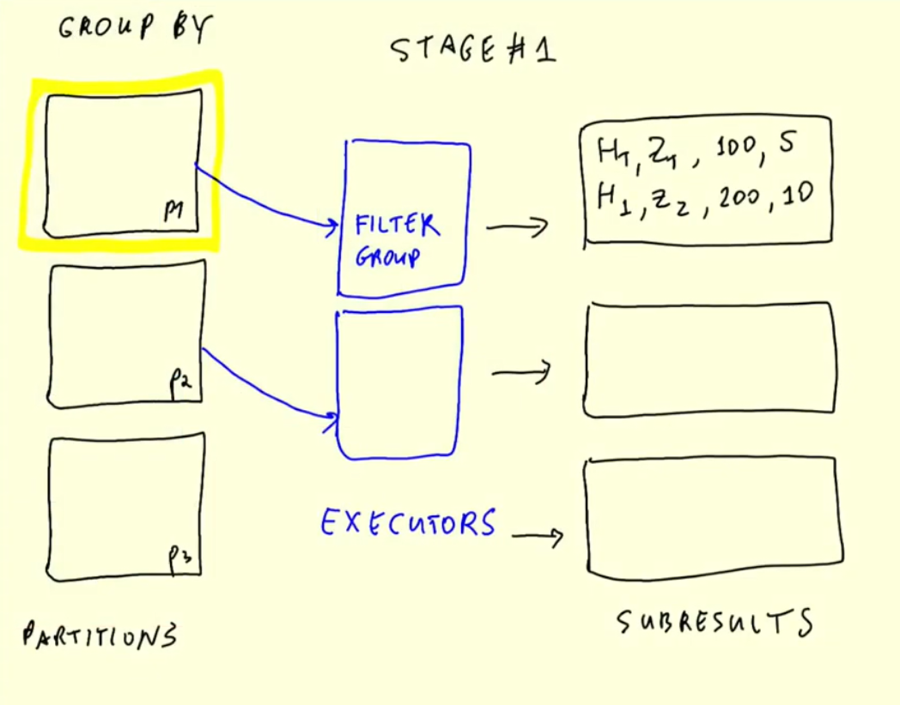
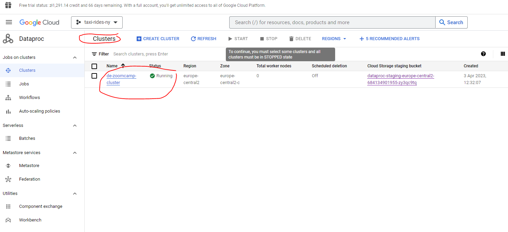

wget https://download.java.net/java/GA/jdk11/9/GPL/openjdk-11.0.2_linux-x64_bin.tar.gz
tar xzfv openjdk-11.0.2_linux-x64_bin.tar.gzComputerized batch processing is a method of running software programs called jobs in batches automatically. While users are required to submit the jobs, no other interaction by the user is required to process the batch. Batches may automatically be run at scheduled times as well as being run contingent on the availability of computer resources.
5.0 What we’ll be covering this week
This week we’ll cover:
- Spark, Spark DataFrames, and Spark SQL
- Joins in Spark
- Spark internals
- Running Spark in the Cloud
- Connecting Spark to a Data Warehouse, BigQuery
5.1 Introduction to Batch Processing
There are typically two different ways of processing data :
Batch processing
Batch systems process large volumes of data and requests in sequential order.
Streaming (week 6)
Stream processing monitors real-time data and continually passes it on in the network.
Given their complementary capabilities, some enterprises have implemented a hybrid system that includes batch processing and stream processing in their daily operations.
What is Batch Processing ?
Batch processing is the method computers use to periodically complete high-volume, repetitive data jobs. Certain data processing tasks, such as backups, filtering, and sorting, can be compute intensive and inefficient to run on individual data transactions. Instead, data systems process such tasks in batches, often in off-peak times when computing resources are more commonly available, such as at the end of the day or overnight. For example, consider an ecommerce system that receives orders throughout the day. Instead of processing every order as it occurs, the system might collect all orders at the end of each day and share them in one batch with the order fulfillment team.
Why is batch processing important?
Organizations use batch processing because it requires minimal human interaction and makes repetitive tasks more efficient to run. You can set up batches of jobs composed of millions of records to be worked through together when compute power is most readily available, putting less stress on your systems. Modern batch processing also requires minimal human supervision or management. If there is an issue, the system automatically notifies the concerned team to solve it. Managers take a hands-off approach, trusting their batch processing software to do its job. More benefits of batch processing follow.
Use cases of batch processing systems
Financial services
Financial services organizations, from agile financial technologies to legacy enterprises, have been using batch processing in areas such as high performance computing for risk management, end-of-day transaction processing, and fraud surveillance. They use batch processing to minimize human error, increase speed and accuracy, and reduce costs with automation.
Software as a service
Enterprises that deliver software as a service (SaaS) applications often run into issues when it comes to scalability. Using batch processing, you can scale customer demand while automating job scheduling. Creating containerized application environments to scale demand for high-volume processing is a project that can take months or even years to complete, but batch processing systems help you achieve the same result in a much shorter timeframe.
Medical research
Analysis of large amounts of data—or big data—is a common requirement in the field of research. You can apply batch processing in data analytics applications such as computational chemistry, clinical modeling, molecular dynamics, and genomic sequencing testing and analysis. For example, scientists use batch processing to capture better data to begin drug design and gain a deeper understanding of the role of a particular biochemical process.
Digital media
Media and entertainment enterprises require highly scalable batch processing systems to automatically process data—such as files, graphics, and visual effects—for high-resolution video content. You can use batch processing to accelerate content creation, dynamically scale media packaging, and automate media workload.
Orchestration
A batch job is a job (a unit of work) that will process data in batches.
Batch jobs may be scheduled in many ways:
- weekly
- daily
- hourly
- three times per hour
- every 5 minutes
and are commonly orchestrated with tools such as dbt or Airflow.
Pros and cons
Advantages
- makes repetitive tasks more efficient to run, with minimal human interaction
- re-executable. Jobs can be parameterized and easily retried if they fail
- as we are not working in real time, we can set up batches of jobs composed of millions of records to be worked through together when compute power is most readily available, which puts less stress on your systems
- scalability. Scripts can be executed on higher spec machines; Spark can be run in bigger clusters, etc
Drawbacks
- there is an inherent delay in obtaining the processes data. The example workflow in the earlier graphic shows a 20 minute workflow to process an hour of data, and so the initial data is almost one hour and a half out of date before we can get our hands on it.
5.1.2 Introduction to Spark
Apache Spark is a unified analytics engine for large-scale data processing.
It is a multi-language engine, which provides high-level APIs in Java, Scala, Python and R, and an optimized engine that supports general execution graphs. It also supports a rich set of higher-level tools including:
- Spark SQL for SQL and structured data processing
- pandas API on Spark for pandas workloads
- MLlib for machine learning
- GraphX for graph processing
- Structured Streaming for incremental computation and stream processing
A typical workflow might look something like this :
5.2 Installing Spark - Linux (Ubuntu 20.04)
Install Java
Here we’ll see how to install Spark 3.3.2 for Linux. It should also work for other Linux distros.
Download and unpack OpenJDK 11 (it’s important that the version is 11 - spark requires 8 or 11) from the command line :
Alternatively we can download Oracle JDK 11.
Define JAVA_HOME and add it to PATH:
export JAVA_HOME="${HOME}/Spark/jdk-11.0.2"
export PATH="${JAVA_HOME}/bin:${PATH}"Check that it works:
java --versionRemove the archive :
rm openjdk-11.0.2_linux-x64_bin.tar.gzInstall Spark
Download and unpack Spark (version 3.3.2) from the command line:
wget https://dlcdn.apache.org/spark/spark-3.3.2/spark-3.3.2-bin-hadoop3.tgz
tar xzfv spark-3.3.2-bin-hadoop3.tgzDefine SPARK_HOME and add it to PATH :
export SPARK_HOME="${HOME}/Spark/spark-3.3.2-bin-hadoop3"
export PATH="${SPARK_HOME}/bin:${PATH}"Check that it works by executing spark-shell and run the following :
val data = 1 to 10000
val distData = sc.parallelize(data)
distData.filter(_ < 10).collect():Remove the archive :
rm spark-3.3.2-bin-hadoop3.tgzAdd these lines to the bottom of the .bashrc file using nano .bashrc :
export JAVA_HOME="${HOME}/Spark/jdk-11.0.2"
export PATH="${JAVA_HOME}/bin:${PATH}"
export SPARK_HOME="${HOME}/Spark/spark-3.3.2-bin-hadoop3"
export PATH="${SPARK_HOME}/bin:${PATH}"Press CTRL + O to save the file, type the file name, and hit ENTER. To exit nano, all you need to do is to press CTRL + X
5.2.1 Running PySpark in Jupyter
This document assumes you already have python. To run PySpark, we first need to add it to PYTHONPATH and run this from the command line :
export PYTHONPATH="${SPARK_HOME}/python/:$PYTHONPATH"
export PYTHONPATH="${SPARK_HOME}/python/lib/py4j-0.10.9-src.zip:$PYTHONPATH"Make sure that the version under ${SPARK_HOME}/python/lib/ matches the filename of py4j or you will encounter ModuleNotFoundError: No module named 'py4j' while executing import pyspark.
For example, if the file under ${SPARK_HOME}/python/lib/ is py4j-0.10.9.3-src.zip, then the export PYTHONPATH statement above should be changed to :
export PYTHONPATH="${SPARK_HOME}/python/lib/py4j-0.10.9.3-src.zip:$PYTHONPATH"Now we can run Jupyter or IPython to test if things work. Go to some other directory, e.g. ~/tmp. Download a CSV file that we’ll use for testing:
wget https://s3.amazonaws.com/nyc-tlc/misc/taxi+_zone_lookup.csvNow let’s run ipython or jupyter notebook and execute:
import pyspark
from pyspark.sql import SparkSession
spark = SparkSession.builder \
.master("local[*]") \
.appName('test') \
.getOrCreate()
df = spark.read \
.option("header", "true") \
.csv('taxi+_zone_lookup.csv')
df.show()23/03/29 11:36:13 WARN Utils: Your hostname, DESKTOP-1UDJOCI resolves to a loopback address: 127.0.1.1; using 172.24.9.22 instead (on interface eth0)
23/03/29 11:36:13 WARN Utils: Set SPARK_LOCAL_IP if you need to bind to another address
23/03/29 11:36:15 WARN NativeCodeLoader: Unable to load native-hadoop library for your platform... using builtin-java classes where applicable
23/03/29 11:36:15 WARN Utils: Service 'SparkUI' could not bind on port 4040. Attempting port 4041.
+----------+-------------+--------------------+------------+
|LocationID| Borough| Zone|service_zone|
+----------+-------------+--------------------+------------+
| 1| EWR| Newark Airport| EWR|
| 2| Queens| Jamaica Bay| Boro Zone|
| 3| Bronx|Allerton/Pelham G...| Boro Zone|
| 4| Manhattan| Alphabet City| Yellow Zone|
| 5|Staten Island| Arden Heights| Boro Zone|
| 6|Staten Island|Arrochar/Fort Wad...| Boro Zone|
| 7| Queens| Astoria| Boro Zone|
| 8| Queens| Astoria Park| Boro Zone|
| 9| Queens| Auburndale| Boro Zone|
| 10| Queens| Baisley Park| Boro Zone|
| 11| Brooklyn| Bath Beach| Boro Zone|
| 12| Manhattan| Battery Park| Yellow Zone|
| 13| Manhattan| Battery Park City| Yellow Zone|
| 14| Brooklyn| Bay Ridge| Boro Zone|
| 15| Queens|Bay Terrace/Fort ...| Boro Zone|
| 16| Queens| Bayside| Boro Zone|
| 17| Brooklyn| Bedford| Boro Zone|
| 18| Bronx| Bedford Park| Boro Zone|
| 19| Queens| Bellerose| Boro Zone|
| 20| Bronx| Belmont| Boro Zone|
+----------+-------------+--------------------+------------+
only showing top 20 rows
Setting default log level to "WARN".
To adjust logging level use sc.setLogLevel(newLevel). For SparkR, use setLogLevel(newLevel).Test that writing works as well:
df.write.parquet('zones')
5.3.1 First Look at Spark/PySpark
Let’s grab our required dataset which is in csv.gz format from here and unzip by running the following from the command line:
wget https://github.com/DataTalksClub/nyc-tlc-data/releases/download/fhvhv/fhvhv_tripdata_2021-01.csv.gz
gzip -dk fhvhv_tripdata_2021-01.csv.gzLet’s see how many rows our dataset has :
!wc -l Data/fhvhv_tripdata_2021-01.csv11908469 Data/fhvhv_tripdata_2021-01.csvSo, almost 12 million records - not insignificant. Let’s now take a look at Spark.
# import required packages
import pyspark
from pyspark.sql import SparkSession# Our entry point to Spark
spark = SparkSession.builder.getOrCreate()
spark23/03/30 09:32:56 WARN Utils: Your hostname, DESKTOP-1UDJOCI resolves to a loopback address: 127.0.1.1; using 172.24.7.86 instead (on interface eth0)
23/03/30 09:32:56 WARN Utils: Set SPARK_LOCAL_IP if you need to bind to another address
23/03/30 09:32:58 WARN NativeCodeLoader: Unable to load native-hadoop library for your platform... using builtin-java classes where applicableSetting default log level to "WARN".
To adjust logging level use sc.setLogLevel(newLevel). For SparkR, use setLogLevel(newLevel).SparkSession - in-memory
We can access the Spark Web UI locally at port :4040 from the link above :
Let’s read our data to Spark :
df = spark.read \
.option("header", "true") \
.csv('Data/fhvhv_tripdata_2021-01.csv') df.show()+-----------------+--------------------+-------------------+-------------------+------------+------------+-------+
|hvfhs_license_num|dispatching_base_num| pickup_datetime| dropoff_datetime|PULocationID|DOLocationID|SR_Flag|
+-----------------+--------------------+-------------------+-------------------+------------+------------+-------+
| HV0003| B02682|2021-01-01 00:33:44|2021-01-01 00:49:07| 230| 166| null|
| HV0003| B02682|2021-01-01 00:55:19|2021-01-01 01:18:21| 152| 167| null|
| HV0003| B02764|2021-01-01 00:23:56|2021-01-01 00:38:05| 233| 142| null|
| HV0003| B02764|2021-01-01 00:42:51|2021-01-01 00:45:50| 142| 143| null|
| HV0003| B02764|2021-01-01 00:48:14|2021-01-01 01:08:42| 143| 78| null|
| HV0005| B02510|2021-01-01 00:06:59|2021-01-01 00:43:01| 88| 42| null|
| HV0005| B02510|2021-01-01 00:50:00|2021-01-01 01:04:57| 42| 151| null|
| HV0003| B02764|2021-01-01 00:14:30|2021-01-01 00:50:27| 71| 226| null|
| HV0003| B02875|2021-01-01 00:22:54|2021-01-01 00:30:20| 112| 255| null|
| HV0003| B02875|2021-01-01 00:40:12|2021-01-01 00:53:31| 255| 232| null|
| HV0003| B02875|2021-01-01 00:56:45|2021-01-01 01:17:42| 232| 198| null|
| HV0003| B02835|2021-01-01 00:29:04|2021-01-01 00:36:27| 113| 48| null|
| HV0003| B02835|2021-01-01 00:48:56|2021-01-01 00:59:12| 239| 75| null|
| HV0004| B02800|2021-01-01 00:15:24|2021-01-01 00:38:31| 181| 237| null|
| HV0004| B02800|2021-01-01 00:45:00|2021-01-01 01:06:45| 236| 68| null|
| HV0003| B02682|2021-01-01 00:11:53|2021-01-01 00:18:06| 256| 148| null|
| HV0003| B02682|2021-01-01 00:28:31|2021-01-01 00:41:40| 79| 80| null|
| HV0003| B02682|2021-01-01 00:50:49|2021-01-01 00:55:59| 17| 217| null|
| HV0005| B02510|2021-01-01 00:08:40|2021-01-01 00:39:39| 62| 29| null|
| HV0003| B02836|2021-01-01 00:53:48|2021-01-01 01:11:40| 22| 22| null|
+-----------------+--------------------+-------------------+-------------------+------------+------------+-------+
only showing top 20 rows
Every time we execute something it is reflected in the Spark Web UI :
# Let's look at the first 5 records
df.head(5)[Row(hvfhs_license_num='HV0003', dispatching_base_num='B02682', pickup_datetime='2021-01-01 00:33:44', dropoff_datetime='2021-01-01 00:49:07', PULocationID='230', DOLocationID='166', SR_Flag=None),
Row(hvfhs_license_num='HV0003', dispatching_base_num='B02682', pickup_datetime='2021-01-01 00:55:19', dropoff_datetime='2021-01-01 01:18:21', PULocationID='152', DOLocationID='167', SR_Flag=None),
Row(hvfhs_license_num='HV0003', dispatching_base_num='B02764', pickup_datetime='2021-01-01 00:23:56', dropoff_datetime='2021-01-01 00:38:05', PULocationID='233', DOLocationID='142', SR_Flag=None),
Row(hvfhs_license_num='HV0003', dispatching_base_num='B02764', pickup_datetime='2021-01-01 00:42:51', dropoff_datetime='2021-01-01 00:45:50', PULocationID='142', DOLocationID='143', SR_Flag=None),
Row(hvfhs_license_num='HV0003', dispatching_base_num='B02764', pickup_datetime='2021-01-01 00:48:14', dropoff_datetime='2021-01-01 01:08:42', PULocationID='143', DOLocationID='78', SR_Flag=None)]Note that Spark (unlike pandas) does not try to infer datatypes - instead everything is treated as a string. We can see this more explicitly by looking at the schema :
df.schemaStructType([StructField('hvfhs_license_num', StringType(), True), StructField('dispatching_base_num', StringType(), True), StructField('pickup_datetime', StringType(), True), StructField('dropoff_datetime', StringType(), True), StructField('PULocationID', StringType(), True), StructField('DOLocationID', StringType(), True), StructField('SR_Flag', StringType(), True)])Let’s now create a new csv file comprising of just 100 rows from our fhvhv_tripdata_2021-01.csv file by running the following from the command line :
head -n 101 Data/fhvhv_tripdata_2021-01.csv > head.csvimport pandas as pddf_pandas = pd.read_csv('Data/head.csv')df_pandas.dtypeshvfhs_license_num object
dispatching_base_num object
pickup_datetime object
dropoff_datetime object
PULocationID int64
DOLocationID int64
SR_Flag float64
dtype: objectWe can see that pandas does a better job at figuring out datatypes but pickup_datetime and dropoff_datetime still require to be converted to a timestamp. We can use Spark to create a Spark DataFrame from a pandas DataFrame :
spark.createDataFrame(df_pandas).schemaStructType([StructField('hvfhs_license_num', StringType(), True), StructField('dispatching_base_num', StringType(), True), StructField('pickup_datetime', StringType(), True), StructField('dropoff_datetime', StringType(), True), StructField('PULocationID', LongType(), True), StructField('DOLocationID', LongType(), True), StructField('SR_Flag', DoubleType(), True)])The above StructType comes from Scala and we can see that the PULocationID and DOLocationID are LongType which is a less memory-efficient format (8 bytes) than integer (4 bytes). So let’s convert the datatypes using Python:
from pyspark.sql import types# convert datatypes of our Spark DataFrame
schema = types.StructType([
types.StructField('hvfhs_license_num', types.StringType(), True), # True argument means can be NULL
types.StructField('dispatching_base_num', types.StringType(), True),
types.StructField('pickup_datetime', types.TimestampType(), True),
types.StructField('dropoff_datetime', types.TimestampType(), True),
types.StructField('PULocationID', types.IntegerType(), True),
types.StructField('DOLocationID', types.IntegerType(), True),
types.StructField('SR_Flag', types.StringType(), True)
])# Load our Spark DataFrame with converted datatypes from above
df = spark.read \
.option("header", "true") \
.schema(schema) \
.csv('Data/fhvhv_tripdata_2021-01.csv')df.head(5)[Row(hvfhs_license_num='HV0003', dispatching_base_num='B02682', pickup_datetime=datetime.datetime(2021, 1, 1, 0, 33, 44), dropoff_datetime=datetime.datetime(2021, 1, 1, 0, 49, 7), PULocationID=230, DOLocationID=166, SR_Flag=None),
Row(hvfhs_license_num='HV0003', dispatching_base_num='B02682', pickup_datetime=datetime.datetime(2021, 1, 1, 0, 55, 19), dropoff_datetime=datetime.datetime(2021, 1, 1, 1, 18, 21), PULocationID=152, DOLocationID=167, SR_Flag=None),
Row(hvfhs_license_num='HV0003', dispatching_base_num='B02764', pickup_datetime=datetime.datetime(2021, 1, 1, 0, 23, 56), dropoff_datetime=datetime.datetime(2021, 1, 1, 0, 38, 5), PULocationID=233, DOLocationID=142, SR_Flag=None),
Row(hvfhs_license_num='HV0003', dispatching_base_num='B02764', pickup_datetime=datetime.datetime(2021, 1, 1, 0, 42, 51), dropoff_datetime=datetime.datetime(2021, 1, 1, 0, 45, 50), PULocationID=142, DOLocationID=143, SR_Flag=None),
Row(hvfhs_license_num='HV0003', dispatching_base_num='B02764', pickup_datetime=datetime.datetime(2021, 1, 1, 0, 48, 14), dropoff_datetime=datetime.datetime(2021, 1, 1, 1, 8, 42), PULocationID=143, DOLocationID=78, SR_Flag=None)]We can see that the our pickup_datetime and dropoff_datetime have been properly parsed.
At the moment we have one large csv file (718MB) :
!du -h Data/fhvhv_tripdata_2021-01.csv718M Data/fhvhv_tripdata_2021-01.csvThat means that only one of our Spark cluster executors will be able to access the file - the remaining clusters will be idle :
A more efficient way to store our data is a bunch of smaller files, known as partitions :

We can achieve partitioning using .repartition :
# break down our csv into multiple partitions
df = df.repartition(24)Note that this is a lazy command - nothing has actually been executed yet. Only when we action something, for example write to parquet, will something happen :
df.write.parquet('Data/fhvhv/2021/01/')Let’s check to see if we have our parquet files :
!ls -lh Data/fhvhv/2021/01total 136M
-rw-r--r-- 1 stephen137 stephen137 0 Mar 30 10:13 _SUCCESS
-rw-r--r-- 1 stephen137 stephen137 8.5M Mar 30 10:13 part-00000-9e5b1ddb-b845-47c8-828f-c2733b793edb-c000.snappy.parquet
-rw-r--r-- 1 stephen137 stephen137 9.3M Mar 30 10:13 part-00001-9e5b1ddb-b845-47c8-828f-c2733b793edb-c000.snappy.parquet
-rw-r--r-- 1 stephen137 stephen137 8.8M Mar 30 10:13 part-00002-9e5b1ddb-b845-47c8-828f-c2733b793edb-c000.snappy.parquet
-rw-r--r-- 1 stephen137 stephen137 8.5M Mar 30 10:13 part-00003-9e5b1ddb-b845-47c8-828f-c2733b793edb-c000.snappy.parquet
-rw-r--r-- 1 stephen137 stephen137 8.4M Mar 30 10:13 part-00004-9e5b1ddb-b845-47c8-828f-c2733b793edb-c000.snappy.parquet
-rw-r--r-- 1 stephen137 stephen137 8.8M Mar 30 10:13 part-00005-9e5b1ddb-b845-47c8-828f-c2733b793edb-c000.snappy.parquet
-rw-r--r-- 1 stephen137 stephen137 8.6M Mar 30 10:13 part-00006-9e5b1ddb-b845-47c8-828f-c2733b793edb-c000.snappy.parquet
-rw-r--r-- 1 stephen137 stephen137 8.3M Mar 30 10:13 part-00007-9e5b1ddb-b845-47c8-828f-c2733b793edb-c000.snappy.parquet
-rw-r--r-- 1 stephen137 stephen137 8.8M Mar 30 10:13 part-00008-9e5b1ddb-b845-47c8-828f-c2733b793edb-c000.snappy.parquet
-rw-r--r-- 1 stephen137 stephen137 8.8M Mar 30 10:13 part-00009-9e5b1ddb-b845-47c8-828f-c2733b793edb-c000.snappy.parquet
-rw-r--r-- 1 stephen137 stephen137 8.6M Mar 30 10:13 part-00010-9e5b1ddb-b845-47c8-828f-c2733b793edb-c000.snappy.parquet
-rw-r--r-- 1 stephen137 stephen137 8.1M Mar 30 10:13 part-00011-9e5b1ddb-b845-47c8-828f-c2733b793edb-c000.snappy.parquet
-rw-r--r-- 1 stephen137 stephen137 8.7M Mar 30 10:13 part-00012-9e5b1ddb-b845-47c8-828f-c2733b793edb-c000.snappy.parquet
-rw-r--r-- 1 stephen137 stephen137 8.6M Mar 30 10:13 part-00013-9e5b1ddb-b845-47c8-828f-c2733b793edb-c000.snappy.parquet
-rw-r--r-- 1 stephen137 stephen137 7.9M Mar 30 10:13 part-00014-9e5b1ddb-b845-47c8-828f-c2733b793edb-c000.snappy.parquet
-rw-r--r-- 1 stephen137 stephen137 7.2M Mar 30 10:13 part-00015-9e5b1ddb-b845-47c8-828f-c2733b793edb-c000.snappy.parquetWe can see that we have 16 parquet files (not sure why there aren’t 24 as specified in .repartition) and compression has been performed, reducing the size from 718MB to 136MB. This is more efficient and makes better use of our Spark clusters.
5.3.2 Spark DataFrames
Let’s now create a Spark DataFrame from our parquet file :
df = spark.read.parquet('Data/fhvhv/2021/01/')Parquet files include the schema and so we don’t have to specify this :
df.printSchema()root
|-- hvfhs_license_num: string (nullable = true)
|-- dispatching_base_num: string (nullable = true)
|-- pickup_datetime: timestamp (nullable = true)
|-- dropoff_datetime: timestamp (nullable = true)
|-- PULocationID: integer (nullable = true)
|-- DOLocationID: integer (nullable = true)
|-- SR_Flag: string (nullable = true)
We can do the usual stuff that we do with a pandas DataFrame, for example .select and .filter :
df.select('pickup_datetime', 'dropoff_datetime', 'PULocationID', 'DOLocationID') DataFrame[pickup_datetime: timestamp, dropoff_datetime: timestamp, PULocationID: int, DOLocationID: int]df.select('pickup_datetime', 'dropoff_datetime', 'PULocationID', 'DOLocationID') \
.filter(df.hvfhs_license_num == 'HV0003') \
.show()+-------------------+-------------------+------------+------------+
| pickup_datetime| dropoff_datetime|PULocationID|DOLocationID|
+-------------------+-------------------+------------+------------+
|2021-01-03 00:29:29|2021-01-03 00:46:37| 197| 82|
|2021-01-03 00:50:22|2021-01-03 00:52:52| 56| 56|
|2021-01-03 00:05:27|2021-01-03 00:15:20| 243| 244|
|2021-01-03 00:24:41|2021-01-03 00:30:47| 243| 127|
|2021-01-03 00:48:14|2021-01-03 01:00:10| 235| 18|
|2021-01-03 00:19:02|2021-01-03 00:28:57| 151| 116|
|2021-01-03 00:09:51|2021-01-03 00:19:16| 121| 28|
|2021-01-03 00:30:20|2021-01-03 00:45:24| 28| 160|
|2021-01-03 00:47:31|2021-01-03 00:56:37| 160| 157|
|2021-01-03 00:26:17|2021-01-03 00:50:36| 236| 265|
|2021-01-03 00:10:04|2021-01-03 00:14:38| 3| 32|
|2021-01-03 00:41:48|2021-01-03 00:48:48| 169| 136|
|2021-01-03 00:54:32|2021-01-03 01:00:54| 235| 169|
|2021-01-03 00:14:38|2021-01-03 00:25:55| 229| 262|
|2021-01-03 00:13:02|2021-01-03 00:39:15| 82| 163|
|2021-01-03 00:48:54|2021-01-03 00:53:13| 164| 186|
|2021-01-03 00:00:50|2021-01-03 00:03:27| 21| 21|
|2021-01-03 00:53:06|2021-01-03 01:14:24| 50| 126|
|2021-01-03 00:17:07|2021-01-03 00:25:03| 89| 71|
|2021-01-03 00:43:17|2021-01-03 00:57:45| 188| 17|
+-------------------+-------------------+------------+------------+
only showing top 20 rows
Actions vs Transformations
In Spark there is a distinction between :
- things that are executed right away (Actions)
- things that are NOT executed right away (Transformations)
User defined functions
Spark like pandas already has a number of in-built functions. We can access these from within Jupyter Notebook by hitting Tab after F. :
For example we can convert datetime datatype to date using :
df \
.withColumn('pickup_date', F.to_date(df.pickup_datetime)) \
.withColumn('dropoff_date', F.to_date(df.dropoff_datetime)) \
.select('pickup_date', 'dropoff_date', 'PULocationID', 'DOLocationID') \
.show()+-----------+------------+------------+------------+
|pickup_date|dropoff_date|PULocationID|DOLocationID|
+-----------+------------+------------+------------+
| 2021-01-03| 2021-01-03| 197| 82|
| 2021-01-03| 2021-01-03| 56| 56|
| 2021-01-03| 2021-01-03| 76| 51|
| 2021-01-03| 2021-01-03| 208| 208|
| 2021-01-03| 2021-01-03| 183| 208|
| 2021-01-03| 2021-01-03| 243| 244|
| 2021-01-03| 2021-01-03| 243| 127|
| 2021-01-03| 2021-01-03| 235| 18|
| 2021-01-03| 2021-01-03| 68| 49|
| 2021-01-03| 2021-01-03| 151| 116|
| 2021-01-03| 2021-01-03| 121| 28|
| 2021-01-03| 2021-01-03| 28| 160|
| 2021-01-03| 2021-01-03| 160| 157|
| 2021-01-03| 2021-01-03| 236| 265|
| 2021-01-03| 2021-01-03| 32| 169|
| 2021-01-03| 2021-01-03| 3| 32|
| 2021-01-03| 2021-01-03| 169| 136|
| 2021-01-03| 2021-01-03| 235| 169|
| 2021-01-03| 2021-01-03| 229| 262|
| 2021-01-03| 2021-01-03| 82| 163|
+-----------+------------+------------+------------+
only showing top 20 rows
However, Spark is more flexible than pandas as it allows us to create and store our own user-defined-functions as illustrated below :
from pyspark.sql import functions as Fdef crazy_stuff(base_num):
num = int(base_num[1:])
if num % 7 == 0:
return f's/{num:03x}'
elif num % 3 == 0:
return f'a/{num:03x}'
else:
return f'e/{num:03x}'crazy_stuff('B02884')'s/b44'crazy_stuff_udf = F.udf(crazy_stuff, returnType=types.StringType())df
.withColumn(‘pickup_date’, F.to_date(df.pickup_datetime))
.withColumn(‘dropoff_date’, F.to_date(df.dropoff_datetime))
.withColumn(‘base_id’, crazy_stuff_udf(df.dispatching_base_num))
.select(‘base_id’, ‘pickup_date’, ‘dropoff_date’, ‘PULocationID’, ‘DOLocationID’)
.show()
5.3.3 Preparing Yellow and Green Taxi Data
We can download the required datasets by using the following bash script :
set -e
URL_PREFIX="https://github.com/DataTalksClub/nyc-tlc-data/releases/download"
for TAXI_TYPE in "yellow" "green"
do
for YEAR in 2020 2021
do
for MONTH in {1..12}
do
if [ $YEAR == 2020 ] || [ $MONTH -lt 8 ]
then
FMONTH=`printf "%02d" ${MONTH}`
URL="${URL_PREFIX}/${TAXI_TYPE}/${TAXI_TYPE}_tripdata_${YEAR}-${FMONTH}.csv.gz"
LOCAL_PREFIX="data/raw/${TAXI_TYPE}/${YEAR}/${FMONTH}"
LOCAL_FILE="${TAXI_TYPE}_tripdata_${YEAR}_${FMONTH}.csv.gz"
LOCAL_PATH="${LOCAL_PREFIX}/${LOCAL_FILE}"
echo "downloading ${URL} to ${LOCAL_PATH}"
mkdir -p ${LOCAL_PREFIX}
wget ${URL} -O ${LOCAL_PATH}
fi
done
done
doneAnd running the script from the command lines for yellow and green for years 2020 and 2021 :
./download_data.sh yellow 2020
./download_data.sh yellow 2021
./download_data.sh green 2020
./download_data.sh green 2021Then we need to configure the schema :
green_schema = types.StructType([
types.StructField("VendorID", types.IntegerType(), True),
types.StructField("lpep_pickup_datetime", types.TimestampType(), True),
types.StructField("lpep_dropoff_datetime", types.TimestampType(), True),
types.StructField("store_and_fwd_flag", types.StringType(), True),
types.StructField("RatecodeID", types.IntegerType(), True),
types.StructField("PULocationID", types.IntegerType(), True),
types.StructField("DOLocationID", types.IntegerType(), True),
types.StructField("passenger_count", types.IntegerType(), True),
types.StructField("trip_distance", types.DoubleType(), True),
types.StructField("fare_amount", types.DoubleType(), True),
types.StructField("extra", types.DoubleType(), True),
types.StructField("mta_tax", types.DoubleType(), True),
types.StructField("tip_amount", types.DoubleType(), True),
types.StructField("tolls_amount", types.DoubleType(), True),
types.StructField("ehail_fee", types.DoubleType(), True),
types.StructField("improvement_surcharge", types.DoubleType(), True),
types.StructField("total_amount", types.DoubleType(), True),
types.StructField("payment_type", types.IntegerType(), True),
types.StructField("trip_type", types.IntegerType(), True),
types.StructField("congestion_surcharge", types.DoubleType(), True)
])
yellow_schema = types.StructType([
types.StructField("VendorID", types.IntegerType(), True),
types.StructField("tpep_pickup_datetime", types.TimestampType(), True),
types.StructField("tpep_dropoff_datetime", types.TimestampType(), True),
types.StructField("passenger_count", types.IntegerType(), True),
types.StructField("trip_distance", types.DoubleType(), True),
types.StructField("RatecodeID", types.IntegerType(), True),
types.StructField("store_and_fwd_flag", types.StringType(), True),
types.StructField("PULocationID", types.IntegerType(), True),
types.StructField("DOLocationID", types.IntegerType(), True),
types.StructField("payment_type", types.IntegerType(), True),
types.StructField("fare_amount", types.DoubleType(), True),
types.StructField("extra", types.DoubleType(), True),
types.StructField("mta_tax", types.DoubleType(), True),
types.StructField("tip_amount", types.DoubleType(), True),
types.StructField("tolls_amount", types.DoubleType(), True),
types.StructField("improvement_surcharge", types.DoubleType(), True),
types.StructField("total_amount", types.DoubleType(), True),
types.StructField("congestion_surcharge", types.DoubleType(), True)
])And then convert from csv to parquet :
year = 2020
for month in range(1, 13):
print(f'processing data for {year}/{month}')
input_path = f'data/raw/green/{year}/{month:02d}/'
output_path = f'data/pq/green/{year}/{month:02d}/'
df_green = spark.read \
.option("header", "true") \
.schema(green_schema) \
.csv(input_path)
df_green \
.repartition(4) \
.write.parquet(output_path)year = 2021
for month in range(1, 13):
print(f'processing data for {year}/{month}')
input_path = f'data/raw/green/{year}/{month:02d}/'
output_path = f'data/pq/green/{year}/{month:02d}/'
df_green = spark.read \
.option("header", "true") \
.schema(green_schema) \
.csv(input_path)
df_green \
.repartition(4) \
.write.parquet(output_path)year = 2020
for month in range(1, 13):
print(f'processing data for {year}/{month}')
input_path = f'data/raw/yellow/{year}/{month:02d}/'
output_path = f'data/pq/yellow/{year}/{month:02d}/'
df_yellow = spark.read \
.option("header", "true") \
.schema(yellow_schema) \
.csv(input_path)
df_yellow \
.repartition(4) \
.write.parquet(output_path)year = 2021
for month in range(1, 13):
print(f'processing data for {year}/{month}')
input_path = f'data/raw/yellow/{year}/{month:02d}/'
output_path = f'data/pq/yellow/{year}/{month:02d}/'
df_green = spark.read \
.option("header", "true") \
.schema(yellow_schema) \
.csv(input_path)
df_green \
.repartition(4) \
.write.parquet(output_path)We can see the structure of our downloaded parquet files using tree :
!tree data/pq/data/pq/
├── green
│ ├── 2020
│ │ ├── 01
│ │ │ ├── _SUCCESS
│ │ │ ├── part-00000-8b01f98f-81fe-4596-89a1-b39326a4fc89-c000.snappy.parquet
│ │ │ ├── part-00001-8b01f98f-81fe-4596-89a1-b39326a4fc89-c000.snappy.parquet
│ │ │ ├── part-00002-8b01f98f-81fe-4596-89a1-b39326a4fc89-c000.snappy.parquet
│ │ │ └── part-00003-8b01f98f-81fe-4596-89a1-b39326a4fc89-c000.snappy.parquet
│ │ ├── 02
│ │ │ ├── _SUCCESS
│ │ │ ├── part-00000-3c243630-2ac8-4a06-979b-1e8a398df62a-c000.snappy.parquet
│ │ │ ├── part-00001-3c243630-2ac8-4a06-979b-1e8a398df62a-c000.snappy.parquet
│ │ │ ├── part-00002-3c243630-2ac8-4a06-979b-1e8a398df62a-c000.snappy.parquet
│ │ │ └── part-00003-3c243630-2ac8-4a06-979b-1e8a398df62a-c000.snappy.parquet
│ │ ├── 03
│ │ │ ├── _SUCCESS
│ │ │ ├── part-00000-be46dfd7-b4d2-4802-a124-99b9d191daf8-c000.snappy.parquet
│ │ │ ├── part-00001-be46dfd7-b4d2-4802-a124-99b9d191daf8-c000.snappy.parquet
│ │ │ ├── part-00002-be46dfd7-b4d2-4802-a124-99b9d191daf8-c000.snappy.parquet
│ │ │ └── part-00003-be46dfd7-b4d2-4802-a124-99b9d191daf8-c000.snappy.parquet
│ │ ├── 04
│ │ │ ├── _SUCCESS
│ │ │ ├── part-00000-cbb6d825-747e-42d8-8237-400f4cf188ee-c000.snappy.parquet
│ │ │ ├── part-00001-cbb6d825-747e-42d8-8237-400f4cf188ee-c000.snappy.parquet
│ │ │ ├── part-00002-cbb6d825-747e-42d8-8237-400f4cf188ee-c000.snappy.parquet
│ │ │ └── part-00003-cbb6d825-747e-42d8-8237-400f4cf188ee-c000.snappy.parquet
│ │ ├── 05
│ │ │ ├── _SUCCESS
│ │ │ ├── part-00000-199c0d3a-f772-495a-b4bd-de3261c10a84-c000.snappy.parquet
│ │ │ ├── part-00001-199c0d3a-f772-495a-b4bd-de3261c10a84-c000.snappy.parquet
│ │ │ ├── part-00002-199c0d3a-f772-495a-b4bd-de3261c10a84-c000.snappy.parquet
│ │ │ └── part-00003-199c0d3a-f772-495a-b4bd-de3261c10a84-c000.snappy.parquet
│ │ ├── 06
│ │ │ ├── _SUCCESS
│ │ │ ├── part-00000-6ba25688-0e78-45b5-ae85-3460a5c5e921-c000.snappy.parquet
│ │ │ ├── part-00001-6ba25688-0e78-45b5-ae85-3460a5c5e921-c000.snappy.parquet
│ │ │ ├── part-00002-6ba25688-0e78-45b5-ae85-3460a5c5e921-c000.snappy.parquet
│ │ │ └── part-00003-6ba25688-0e78-45b5-ae85-3460a5c5e921-c000.snappy.parquet
│ │ ├── 07
│ │ │ ├── _SUCCESS
│ │ │ ├── part-00000-626c45ff-38e2-4bdf-8add-f61defd0c946-c000.snappy.parquet
│ │ │ ├── part-00001-626c45ff-38e2-4bdf-8add-f61defd0c946-c000.snappy.parquet
│ │ │ ├── part-00002-626c45ff-38e2-4bdf-8add-f61defd0c946-c000.snappy.parquet
│ │ │ └── part-00003-626c45ff-38e2-4bdf-8add-f61defd0c946-c000.snappy.parquet
│ │ ├── 08
│ │ │ ├── _SUCCESS
│ │ │ ├── part-00000-70a42578-baa5-4d7b-8350-3c8b54451443-c000.snappy.parquet
│ │ │ ├── part-00001-70a42578-baa5-4d7b-8350-3c8b54451443-c000.snappy.parquet
│ │ │ ├── part-00002-70a42578-baa5-4d7b-8350-3c8b54451443-c000.snappy.parquet
│ │ │ └── part-00003-70a42578-baa5-4d7b-8350-3c8b54451443-c000.snappy.parquet
│ │ ├── 09
│ │ │ ├── _SUCCESS
│ │ │ ├── part-00000-7bf574b0-dfbd-461a-8ce5-f65bd261d528-c000.snappy.parquet
│ │ │ ├── part-00001-7bf574b0-dfbd-461a-8ce5-f65bd261d528-c000.snappy.parquet
│ │ │ ├── part-00002-7bf574b0-dfbd-461a-8ce5-f65bd261d528-c000.snappy.parquet
│ │ │ └── part-00003-7bf574b0-dfbd-461a-8ce5-f65bd261d528-c000.snappy.parquet
│ │ ├── 10
│ │ │ ├── _SUCCESS
│ │ │ ├── part-00000-030469d0-906b-477c-accd-57a0d179dd2d-c000.snappy.parquet
│ │ │ ├── part-00001-030469d0-906b-477c-accd-57a0d179dd2d-c000.snappy.parquet
│ │ │ ├── part-00002-030469d0-906b-477c-accd-57a0d179dd2d-c000.snappy.parquet
│ │ │ └── part-00003-030469d0-906b-477c-accd-57a0d179dd2d-c000.snappy.parquet
│ │ ├── 11
│ │ │ ├── _SUCCESS
│ │ │ ├── part-00000-4136ae51-88ac-4aa9-9d3c-d8ee0363f9cf-c000.snappy.parquet
│ │ │ ├── part-00001-4136ae51-88ac-4aa9-9d3c-d8ee0363f9cf-c000.snappy.parquet
│ │ │ ├── part-00002-4136ae51-88ac-4aa9-9d3c-d8ee0363f9cf-c000.snappy.parquet
│ │ │ └── part-00003-4136ae51-88ac-4aa9-9d3c-d8ee0363f9cf-c000.snappy.parquet
│ │ └── 12
│ │ ├── _SUCCESS
│ │ ├── part-00000-5e4ac23a-9ea2-4d39-a974-72fa35bed604-c000.snappy.parquet
│ │ ├── part-00001-5e4ac23a-9ea2-4d39-a974-72fa35bed604-c000.snappy.parquet
│ │ ├── part-00002-5e4ac23a-9ea2-4d39-a974-72fa35bed604-c000.snappy.parquet
│ │ └── part-00003-5e4ac23a-9ea2-4d39-a974-72fa35bed604-c000.snappy.parquet
│ └── 2021
│ ├── 01
│ │ ├── _SUCCESS
│ │ ├── part-00000-a9d9b6cb-a441-4c75-ad83-e0dabbe67945-c000.snappy.parquet
│ │ ├── part-00001-a9d9b6cb-a441-4c75-ad83-e0dabbe67945-c000.snappy.parquet
│ │ ├── part-00002-a9d9b6cb-a441-4c75-ad83-e0dabbe67945-c000.snappy.parquet
│ │ └── part-00003-a9d9b6cb-a441-4c75-ad83-e0dabbe67945-c000.snappy.parquet
│ ├── 02
│ │ ├── _SUCCESS
│ │ ├── part-00000-125ad13e-4d67-4cb1-8ae1-2fe33966fee4-c000.snappy.parquet
│ │ ├── part-00001-125ad13e-4d67-4cb1-8ae1-2fe33966fee4-c000.snappy.parquet
│ │ ├── part-00002-125ad13e-4d67-4cb1-8ae1-2fe33966fee4-c000.snappy.parquet
│ │ └── part-00003-125ad13e-4d67-4cb1-8ae1-2fe33966fee4-c000.snappy.parquet
│ ├── 03
│ │ ├── _SUCCESS
│ │ ├── part-00000-1bc79775-8fc3-4709-854c-3351661cd6c4-c000.snappy.parquet
│ │ ├── part-00001-1bc79775-8fc3-4709-854c-3351661cd6c4-c000.snappy.parquet
│ │ ├── part-00002-1bc79775-8fc3-4709-854c-3351661cd6c4-c000.snappy.parquet
│ │ └── part-00003-1bc79775-8fc3-4709-854c-3351661cd6c4-c000.snappy.parquet
│ ├── 04
│ │ ├── _SUCCESS
│ │ ├── part-00000-ceb35fd7-2ce7-4b84-83a3-cf31e6123391-c000.snappy.parquet
│ │ ├── part-00001-ceb35fd7-2ce7-4b84-83a3-cf31e6123391-c000.snappy.parquet
│ │ ├── part-00002-ceb35fd7-2ce7-4b84-83a3-cf31e6123391-c000.snappy.parquet
│ │ └── part-00003-ceb35fd7-2ce7-4b84-83a3-cf31e6123391-c000.snappy.parquet
│ ├── 05
│ │ ├── _SUCCESS
│ │ ├── part-00000-0f4cffc3-22ef-4558-9ceb-40c78fd0a048-c000.snappy.parquet
│ │ ├── part-00001-0f4cffc3-22ef-4558-9ceb-40c78fd0a048-c000.snappy.parquet
│ │ ├── part-00002-0f4cffc3-22ef-4558-9ceb-40c78fd0a048-c000.snappy.parquet
│ │ └── part-00003-0f4cffc3-22ef-4558-9ceb-40c78fd0a048-c000.snappy.parquet
│ ├── 06
│ │ ├── _SUCCESS
│ │ ├── part-00000-5ad0ef6e-9c3b-488a-85a0-b34a4c364eb0-c000.snappy.parquet
│ │ ├── part-00001-5ad0ef6e-9c3b-488a-85a0-b34a4c364eb0-c000.snappy.parquet
│ │ ├── part-00002-5ad0ef6e-9c3b-488a-85a0-b34a4c364eb0-c000.snappy.parquet
│ │ └── part-00003-5ad0ef6e-9c3b-488a-85a0-b34a4c364eb0-c000.snappy.parquet
│ └── 07
│ ├── _SUCCESS
│ ├── part-00000-4283b1a5-f5da-4219-97b2-2bd986599afd-c000.snappy.parquet
│ ├── part-00001-4283b1a5-f5da-4219-97b2-2bd986599afd-c000.snappy.parquet
│ ├── part-00002-4283b1a5-f5da-4219-97b2-2bd986599afd-c000.snappy.parquet
│ └── part-00003-4283b1a5-f5da-4219-97b2-2bd986599afd-c000.snappy.parquet
└── yellow
├── 2020
│ ├── 01
│ │ ├── _SUCCESS
│ │ ├── part-00000-13e18553-247c-48af-af4e-b64c5f6024ed-c000.snappy.parquet
│ │ ├── part-00001-13e18553-247c-48af-af4e-b64c5f6024ed-c000.snappy.parquet
│ │ ├── part-00002-13e18553-247c-48af-af4e-b64c5f6024ed-c000.snappy.parquet
│ │ └── part-00003-13e18553-247c-48af-af4e-b64c5f6024ed-c000.snappy.parquet
│ ├── 02
│ │ ├── _SUCCESS
│ │ ├── part-00000-2bc461f8-6484-43c8-8757-97e638e454ae-c000.snappy.parquet
│ │ ├── part-00001-2bc461f8-6484-43c8-8757-97e638e454ae-c000.snappy.parquet
│ │ ├── part-00002-2bc461f8-6484-43c8-8757-97e638e454ae-c000.snappy.parquet
│ │ └── part-00003-2bc461f8-6484-43c8-8757-97e638e454ae-c000.snappy.parquet
│ ├── 03
│ │ ├── _SUCCESS
│ │ ├── part-00000-3c79e29b-b3fb-4f4c-9ce2-6eb6341de80c-c000.snappy.parquet
│ │ ├── part-00001-3c79e29b-b3fb-4f4c-9ce2-6eb6341de80c-c000.snappy.parquet
│ │ ├── part-00002-3c79e29b-b3fb-4f4c-9ce2-6eb6341de80c-c000.snappy.parquet
│ │ └── part-00003-3c79e29b-b3fb-4f4c-9ce2-6eb6341de80c-c000.snappy.parquet
│ ├── 04
│ │ ├── _SUCCESS
│ │ ├── part-00000-c7ea0f14-9b83-40d7-bc3b-168d552efe6f-c000.snappy.parquet
│ │ ├── part-00001-c7ea0f14-9b83-40d7-bc3b-168d552efe6f-c000.snappy.parquet
│ │ ├── part-00002-c7ea0f14-9b83-40d7-bc3b-168d552efe6f-c000.snappy.parquet
│ │ └── part-00003-c7ea0f14-9b83-40d7-bc3b-168d552efe6f-c000.snappy.parquet
│ ├── 05
│ │ ├── _SUCCESS
│ │ ├── part-00000-c966cece-74cf-4fb9-962e-9c818a4f1964-c000.snappy.parquet
│ │ ├── part-00001-c966cece-74cf-4fb9-962e-9c818a4f1964-c000.snappy.parquet
│ │ ├── part-00002-c966cece-74cf-4fb9-962e-9c818a4f1964-c000.snappy.parquet
│ │ └── part-00003-c966cece-74cf-4fb9-962e-9c818a4f1964-c000.snappy.parquet
│ ├── 06
│ │ ├── _SUCCESS
│ │ ├── part-00000-9fb65628-ffb1-49b4-9682-0c71b2099651-c000.snappy.parquet
│ │ ├── part-00001-9fb65628-ffb1-49b4-9682-0c71b2099651-c000.snappy.parquet
│ │ ├── part-00002-9fb65628-ffb1-49b4-9682-0c71b2099651-c000.snappy.parquet
│ │ └── part-00003-9fb65628-ffb1-49b4-9682-0c71b2099651-c000.snappy.parquet
│ ├── 07
│ │ ├── _SUCCESS
│ │ ├── part-00000-71ac3c30-7e37-438e-873d-1de2448ef2b6-c000.snappy.parquet
│ │ ├── part-00001-71ac3c30-7e37-438e-873d-1de2448ef2b6-c000.snappy.parquet
│ │ ├── part-00002-71ac3c30-7e37-438e-873d-1de2448ef2b6-c000.snappy.parquet
│ │ └── part-00003-71ac3c30-7e37-438e-873d-1de2448ef2b6-c000.snappy.parquet
│ ├── 08
│ │ ├── _SUCCESS
│ │ ├── part-00000-5f4e316f-cefd-4aa3-a5cb-b1aefe474182-c000.snappy.parquet
│ │ ├── part-00001-5f4e316f-cefd-4aa3-a5cb-b1aefe474182-c000.snappy.parquet
│ │ ├── part-00002-5f4e316f-cefd-4aa3-a5cb-b1aefe474182-c000.snappy.parquet
│ │ └── part-00003-5f4e316f-cefd-4aa3-a5cb-b1aefe474182-c000.snappy.parquet
│ ├── 09
│ │ ├── _SUCCESS
│ │ ├── part-00000-9cf0d56f-f5bc-42f4-9e3c-4472f1fef599-c000.snappy.parquet
│ │ ├── part-00001-9cf0d56f-f5bc-42f4-9e3c-4472f1fef599-c000.snappy.parquet
│ │ ├── part-00002-9cf0d56f-f5bc-42f4-9e3c-4472f1fef599-c000.snappy.parquet
│ │ └── part-00003-9cf0d56f-f5bc-42f4-9e3c-4472f1fef599-c000.snappy.parquet
│ ├── 10
│ │ ├── _SUCCESS
│ │ ├── part-00000-79c26c54-874e-4a96-9ad6-b38b1b938766-c000.snappy.parquet
│ │ ├── part-00001-79c26c54-874e-4a96-9ad6-b38b1b938766-c000.snappy.parquet
│ │ ├── part-00002-79c26c54-874e-4a96-9ad6-b38b1b938766-c000.snappy.parquet
│ │ └── part-00003-79c26c54-874e-4a96-9ad6-b38b1b938766-c000.snappy.parquet
│ ├── 11
│ │ ├── _SUCCESS
│ │ ├── part-00000-b3646277-b1f2-495f-a225-12cae19dc1ff-c000.snappy.parquet
│ │ ├── part-00001-b3646277-b1f2-495f-a225-12cae19dc1ff-c000.snappy.parquet
│ │ ├── part-00002-b3646277-b1f2-495f-a225-12cae19dc1ff-c000.snappy.parquet
│ │ └── part-00003-b3646277-b1f2-495f-a225-12cae19dc1ff-c000.snappy.parquet
│ └── 12
│ ├── _SUCCESS
│ ├── part-00000-ab762734-8696-4d42-8f9d-d5b924d4fb29-c000.snappy.parquet
│ ├── part-00001-ab762734-8696-4d42-8f9d-d5b924d4fb29-c000.snappy.parquet
│ ├── part-00002-ab762734-8696-4d42-8f9d-d5b924d4fb29-c000.snappy.parquet
│ └── part-00003-ab762734-8696-4d42-8f9d-d5b924d4fb29-c000.snappy.parquet
└── 2021
├── 01
│ ├── _SUCCESS
│ ├── part-00000-1d24a28b-80bb-4115-9650-456962d66d59-c000.snappy.parquet
│ ├── part-00001-1d24a28b-80bb-4115-9650-456962d66d59-c000.snappy.parquet
│ ├── part-00002-1d24a28b-80bb-4115-9650-456962d66d59-c000.snappy.parquet
│ └── part-00003-1d24a28b-80bb-4115-9650-456962d66d59-c000.snappy.parquet
├── 02
│ ├── _SUCCESS
│ ├── part-00000-79399355-08a8-44fd-9a60-1cb83a19454e-c000.snappy.parquet
│ ├── part-00001-79399355-08a8-44fd-9a60-1cb83a19454e-c000.snappy.parquet
│ ├── part-00002-79399355-08a8-44fd-9a60-1cb83a19454e-c000.snappy.parquet
│ └── part-00003-79399355-08a8-44fd-9a60-1cb83a19454e-c000.snappy.parquet
├── 03
│ ├── _SUCCESS
│ ├── part-00000-b1231c11-d032-4088-b387-24cc04eaff40-c000.snappy.parquet
│ ├── part-00001-b1231c11-d032-4088-b387-24cc04eaff40-c000.snappy.parquet
│ ├── part-00002-b1231c11-d032-4088-b387-24cc04eaff40-c000.snappy.parquet
│ └── part-00003-b1231c11-d032-4088-b387-24cc04eaff40-c000.snappy.parquet
├── 04
│ ├── _SUCCESS
│ ├── part-00000-828ae8bb-c582-4e3e-a25b-8ffac100299e-c000.snappy.parquet
│ ├── part-00001-828ae8bb-c582-4e3e-a25b-8ffac100299e-c000.snappy.parquet
│ ├── part-00002-828ae8bb-c582-4e3e-a25b-8ffac100299e-c000.snappy.parquet
│ └── part-00003-828ae8bb-c582-4e3e-a25b-8ffac100299e-c000.snappy.parquet
├── 05
│ ├── _SUCCESS
│ ├── part-00000-a06be6df-4c6a-4a9c-994b-2e579cd79fd5-c000.snappy.parquet
│ ├── part-00001-a06be6df-4c6a-4a9c-994b-2e579cd79fd5-c000.snappy.parquet
│ ├── part-00002-a06be6df-4c6a-4a9c-994b-2e579cd79fd5-c000.snappy.parquet
│ └── part-00003-a06be6df-4c6a-4a9c-994b-2e579cd79fd5-c000.snappy.parquet
├── 06
│ ├── _SUCCESS
│ ├── part-00000-1d9a9dc9-eda5-44c8-b21d-2d8c3d6d0e62-c000.snappy.parquet
│ ├── part-00001-1d9a9dc9-eda5-44c8-b21d-2d8c3d6d0e62-c000.snappy.parquet
│ ├── part-00002-1d9a9dc9-eda5-44c8-b21d-2d8c3d6d0e62-c000.snappy.parquet
│ └── part-00003-1d9a9dc9-eda5-44c8-b21d-2d8c3d6d0e62-c000.snappy.parquet
└── 07
├── _SUCCESS
├── part-00000-98a78c13-da79-4520-b66e-f7ba8384138e-c000.snappy.parquet
├── part-00001-98a78c13-da79-4520-b66e-f7ba8384138e-c000.snappy.parquet
├── part-00002-98a78c13-da79-4520-b66e-f7ba8384138e-c000.snappy.parquet
└── part-00003-98a78c13-da79-4520-b66e-f7ba8384138e-c000.snappy.parquet
44 directories, 190 files5.3.4 SQL with Spark
We are going to recreate the monthly_zone_revenue model that we created previously in Week 4 using dbt:
{{ config(materialized='table') }}
with trips_data as (
select * from {{ ref('fact_trips') }}
)
select
-- Reveneue grouping
pickup_zone as revenue_zone,
date_trunc('month', pickup_datetime) as revenue_month,
--Note: For BQ use instead: date_trunc(pickup_datetime, month) as revenue_month,
service_type,
-- Revenue calculation
sum(fare_amount) as revenue_monthly_fare,
sum(extra) as revenue_monthly_extra,
sum(mta_tax) as revenue_monthly_mta_tax,
sum(tip_amount) as revenue_monthly_tip_amount,
sum(tolls_amount) as revenue_monthly_tolls_amount,
sum(ehail_fee) as revenue_monthly_ehail_fee,
sum(improvement_surcharge) as revenue_monthly_improvement_surcharge,
sum(total_amount) as revenue_monthly_total_amount,
sum(congestion_surcharge) as revenue_monthly_congestion_surcharge,
-- Additional calculations
count(tripid) as total_monthly_trips,
avg(passenger_count) as avg_montly_passenger_count,
avg(trip_distance) as avg_montly_trip_distance
from trips_data
group by 1,2,3First, let’s replicate the trips_data dataset which was created in Week 4 by combining the yellow and green datasets :
df_green = spark.read.parquet('data/pq/green/*/*')df_green.printSchema()root
|-- VendorID: integer (nullable = true)
|-- lpep_pickup_datetime: timestamp (nullable = true)
|-- lpep_dropoff_datetime: timestamp (nullable = true)
|-- store_and_fwd_flag: string (nullable = true)
|-- RatecodeID: integer (nullable = true)
|-- PULocationID: integer (nullable = true)
|-- DOLocationID: integer (nullable = true)
|-- passenger_count: integer (nullable = true)
|-- trip_distance: double (nullable = true)
|-- fare_amount: double (nullable = true)
|-- extra: double (nullable = true)
|-- mta_tax: double (nullable = true)
|-- tip_amount: double (nullable = true)
|-- tolls_amount: double (nullable = true)
|-- ehail_fee: double (nullable = true)
|-- improvement_surcharge: double (nullable = true)
|-- total_amount: double (nullable = true)
|-- payment_type: integer (nullable = true)
|-- trip_type: integer (nullable = true)
|-- congestion_surcharge: double (nullable = true)
df_yellow = spark.read.parquet('data/pq/yellow/*/*')df_yellow.printSchema()root
|-- VendorID: integer (nullable = true)
|-- tpep_pickup_datetime: timestamp (nullable = true)
|-- tpep_dropoff_datetime: timestamp (nullable = true)
|-- passenger_count: integer (nullable = true)
|-- trip_distance: double (nullable = true)
|-- RatecodeID: integer (nullable = true)
|-- store_and_fwd_flag: string (nullable = true)
|-- PULocationID: integer (nullable = true)
|-- DOLocationID: integer (nullable = true)
|-- payment_type: integer (nullable = true)
|-- fare_amount: double (nullable = true)
|-- extra: double (nullable = true)
|-- mta_tax: double (nullable = true)
|-- tip_amount: double (nullable = true)
|-- tolls_amount: double (nullable = true)
|-- improvement_surcharge: double (nullable = true)
|-- total_amount: double (nullable = true)
|-- congestion_surcharge: double (nullable = true)
The pick up and drop off fields have a different naming convention, Let’s correct for that using .withColumnRenamed:
df_green = df_green \
.withColumnRenamed('lpep_pickup_datetime', 'pickup_datetime') \
.withColumnRenamed('lpep_dropoff_datetime', 'dropoff_datetime')df_yellow = df_yellow \
.withColumnRenamed('tpep_pickup_datetime', 'pickup_datetime') \
.withColumnRenamed('tpep_dropoff_datetime', 'dropoff_datetime')We only want to combine on common columns, but there is still some inconsistency between the two datasets, for example green has ehail_fee whereas yellow does not. We can use Python’s set object to help with this :
common_columns = []
yellow_columns = set(df_yellow.columns)
for col in df_green.columns:
if col in yellow_columns:
common_columns.append(col)common_columns['VendorID',
'pickup_datetime',
'dropoff_datetime',
'store_and_fwd_flag',
'RatecodeID',
'PULocationID',
'DOLocationID',
'passenger_count',
'trip_distance',
'fare_amount',
'extra',
'mta_tax',
'tip_amount',
'tolls_amount',
'improvement_surcharge',
'total_amount',
'payment_type',
'congestion_surcharge']We want to be able to distinguish between the yellow and green taxi services in our combined data set. To do this, prior to combining, we should add a new column to our green and yellow datasets named service_type. To add a new column to a PySpark DataFrame we can use the .lit() function.
from pyspark.sql import functions as Fdf_green \
.select(common_columns) \
.withColumn('service_type', F.lit('green'))DataFrame[VendorID: int, pickup_datetime: timestamp, dropoff_datetime: timestamp, store_and_fwd_flag: string, RatecodeID: int, PULocationID: int, DOLocationID: int, passenger_count: int, trip_distance: double, fare_amount: double, extra: double, mta_tax: double, tip_amount: double, tolls_amount: double, improvement_surcharge: double, total_amount: double, payment_type: int, congestion_surcharge: double, service_type: string]df_yellow \
.select(common_columns) \
.withColumn('service_type', F.lit('yellow'))DataFrame[VendorID: int, pickup_datetime: timestamp, dropoff_datetime: timestamp, store_and_fwd_flag: string, RatecodeID: int, PULocationID: int, DOLocationID: int, passenger_count: int, trip_distance: double, fare_amount: double, extra: double, mta_tax: double, tip_amount: double, tolls_amount: double, improvement_surcharge: double, total_amount: double, payment_type: int, congestion_surcharge: double, service_type: string]df_green_sel = df_green \
.select(common_columns) \
.withColumn('service_type', F.lit('green'))df_yellow_sel = df_yellow \
.select(common_columns) \
.withColumn('service_type', F.lit('yellow'))To merge our green and yellow datasets we can once again make use of one of Python’s setfunctions .unionALL:
df_green_sel.unionAll(df_yellow_sel)DataFrame[VendorID: int, pickup_datetime: timestamp, dropoff_datetime: timestamp, store_and_fwd_flag: string, RatecodeID: int, PULocationID: int, DOLocationID: int, passenger_count: int, trip_distance: double, fare_amount: double, extra: double, mta_tax: double, tip_amount: double, tolls_amount: double, improvement_surcharge: double, total_amount: double, payment_type: int, congestion_surcharge: double, service_type: string]df_trips_data = df_green_sel.unionAll(df_yellow_sel)And we can use .groupBy to show the distribution by service type :
df_trips_data.groupBy('service_type').count().show()[Stage 341:===================================> (24 + 13) / 37] +------------+--------+
|service_type| count|
+------------+--------+
| green| 2304517|
| yellow|39649199|
+------------+--------+
Querying the data with SQL
First, let’s register a temporary table :
df_trips_data.registerTempTable('trips_data')/home/stephen137/mambaforge/lib/python3.10/site-packages/pyspark/sql/dataframe.py:229: FutureWarning: Deprecated in 2.0, use createOrReplaceTempView instead.
warnings.warn("Deprecated in 2.0, use createOrReplaceTempView instead.", FutureWarning)We can run SQL queries in Spark using spark.sql :
spark.sql("""
SELECT
service_type,
count(1)
FROM
trips_data
GROUP BY
service_type
""").show()[Stage 344:=====================================> (26 + 11) / 37] +------------+--------+
|service_type|count(1)|
+------------+--------+
| green| 2304517|
| yellow|39649199|
+------------+--------+
Let’s get all the column names as a list :
df_trips_data.columns['VendorID',
'pickup_datetime',
'dropoff_datetime',
'store_and_fwd_flag',
'RatecodeID',
'PULocationID',
'DOLocationID',
'passenger_count',
'trip_distance',
'fare_amount',
'extra',
'mta_tax',
'tip_amount',
'tolls_amount',
'improvement_surcharge',
'total_amount',
'payment_type',
'congestion_surcharge',
'service_type']Let’s finally replicate the monthly_zone_revenue model created in Week 4 using dbt:
df_result = spark.sql("""
SELECT
-- Reveneue grouping
PULocationID AS revenue_zone,
date_trunc('month', pickup_datetime) AS revenue_month,
service_type,
-- Revenue calculation
SUM(fare_amount) AS revenue_monthly_fare,
SUM(extra) AS revenue_monthly_extra,
SUM(mta_tax) AS revenue_monthly_mta_tax,
SUM(tip_amount) AS revenue_monthly_tip_amount,
SUM(tolls_amount) AS revenue_monthly_tolls_amount,
SUM(improvement_surcharge) AS revenue_monthly_improvement_surcharge,
SUM(total_amount) AS revenue_monthly_total_amount,
SUM(congestion_surcharge) AS revenue_monthly_congestion_surcharge,
-- Additional calculations
AVG(passenger_count) AS avg_montly_passenger_count,
AVG(trip_distance) AS avg_montly_trip_distance
FROM
trips_data
GROUP BY
1, 2, 3
""")df_result.show()[Stage 347:=====================================================> (36 + 1) / 37] +------------+-------------------+------------+--------------------+---------------------+-----------------------+--------------------------+----------------------------+-------------------------------------+----------------------------+------------------------------------+--------------------------+------------------------+
|revenue_zone| revenue_month|service_type|revenue_monthly_fare|revenue_monthly_extra|revenue_monthly_mta_tax|revenue_monthly_tip_amount|revenue_monthly_tolls_amount|revenue_monthly_improvement_surcharge|revenue_monthly_total_amount|revenue_monthly_congestion_surcharge|avg_montly_passenger_count|avg_montly_trip_distance|
+------------+-------------------+------------+--------------------+---------------------+-----------------------+--------------------------+----------------------------+-------------------------------------+----------------------------+------------------------------------+--------------------------+------------------------+
| 47|2020-01-01 00:00:00| green| 16630.150000000023| 1192.0| 160.0| 42.230000000000004| 523.0000000000002| 210.90000000000015| 18770.429999999975| 11.0| 1.177685950413223| 4.645000000000002|
| 53|2020-01-01 00:00:00| green| 6281.649999999996| 330.25| 49.0| 39.22| 102.50000000000001| 68.39999999999988| 6873.770000000004| 2.75| 1.2417582417582418| 6.929710743801654|
| 128|2020-01-01 00:00:00| green| 3261.330000000001| 158.0| 35.5| 82.25| 104.03999999999999| 34.50000000000004| 3714.0200000000004| 27.5| 1.0169491525423728| 7.023280000000001|
| 150|2020-01-01 00:00:00| green| 9996.16| 627.5| 98.0| 97.86999999999998| 149.14| 109.49999999999962| 11082.069999999992| 0.0| 1.1147540983606556| 5.393588516746414|
| 263|2020-01-01 00:00:00| green| 8987.339999999998| 561.0| 124.55| 315.27| 335.0600000000001| 127.1999999999995| 10684.170000000004| 239.25| 1.4293478260869565| 5.264249422632793|
| 19|2020-01-01 00:00:00| green| 7798.879999999999| 377.0| 42.0| 6.66| 174.40000000000003| 67.4999999999999| 8466.440000000004| 0.0| 1.046875| 7.850781893004114|
| 186|2020-01-01 00:00:00| green| 1539.23| 85.25| 6.0| 0.0| 97.91999999999999| 13.8| 1742.1999999999998| 0.0| 1.6666666666666667| 9.389565217391304|
| 238|2020-01-01 00:00:00| green| 5397.990000000001| 403.5| 20.0| 0.0| 124.68| 61.19999999999993| 6007.370000000001| 0.0| 1.2| 6.460536585365853|
| 126|2020-01-01 00:00:00| green| 11827.83999999999| 766.75| 110.5| 101.86999999999999| 458.2800000000002| 145.19999999999933| 13425.340000000004| 11.0| 1.275| 5.187806691449811|
| 96|2020-01-01 00:00:00| green| 628.8000000000001| 27.5| 4.0| 0.0| 55.08| 5.699999999999999| 721.0799999999999| 0.0| 1.1428571428571428| 7.0195454545454545|
| 116|2020-01-01 00:00:00| green| 78706.70999999996| 3319.25| 2632.5| 5847.950000000004| 1467.9299999999985| 1756.4999999999027| 96138.29000000306| 2793.0| 1.212485896953742| 3.068908940397343|
| 90|2020-01-01 00:00:00| green| 2921.62| 165.0| 19.0| 0.0| 190.56000000000006| 25.800000000000022| 3321.9800000000005| 0.0| 1.2| 8.451627906976745|
| 101|2020-01-01 00:00:00| green| 8472.769999999997| 460.5| 38.0| 15.219999999999999| 232.56000000000006| 70.49999999999986| 9289.550000000001| 2.75| 1.0512820512820513| 9.081153846153853|
| 227|2020-01-01 00:00:00| green| 14857.100000000011| 776.75| 94.5| 21.569999999999997| 271.57000000000005| 137.09999999999937| 16173.289999999986| 0.0| 1.0743801652892562| 7.235522088353416|
| 180|2020-01-01 00:00:00| green| 4024.4600000000005| 210.75| 26.0| 20.24| 84.88999999999999| 43.20000000000006| 4414.240000000002| 2.75| 1.3396226415094339| 5.324473684210526|
| 190|2020-01-01 00:00:00| green| 3786.0199999999995| 175.0| 76.5| 242.16000000000008| 24.48| 62.69999999999993| 4419.360000000001| 35.75| 1.4244604316546763| 3.5506912442396326|
| 264|2008-12-01 00:00:00| green| 0.0| 0.0| 0.0| 0.0| 0.0| 0.0| 0.0| 0.0| 1.0| 0.0|
| 119|2020-01-01 00:00:00| green| 21224.650000000012| 1391.0| 186.5| 74.62| 730.0800000000004| 245.7000000000011| 23870.19999999996| 13.75| 1.1612903225806452| 5.585108695652177|
| 26|2020-01-01 00:00:00| green| 27098.79000000005| 1743.25| 221.5| 121.72999999999999| 551.2800000000002| 292.50000000000233| 30034.89999999993| 0.0| 1.1054852320675106| 4.771315789473685|
| 120|2020-01-01 00:00:00| green| 692.4300000000001| 5.25| 7.0| 21.970000000000002| 12.24| 8.399999999999999| 752.7899999999998| 5.5| 1.1935483870967742| 4.6365625|
+------------+-------------------+------------+--------------------+---------------------+-----------------------+--------------------------+----------------------------+-------------------------------------+----------------------------+------------------------------------+--------------------------+------------------------+
only showing top 20 rows
And save our results :
df_result.coalesce(1).write.parquet('data/report/revenue/', mode='overwrite') The coalesce() is used to decrease the number of partitions in an efficient way :
!ls -lh data/report/revenuetotal 516K
-rw-r--r-- 1 stephen137 stephen137 0 Mar 30 15:37 _SUCCESS
-rw-r--r-- 1 stephen137 stephen137 513K Mar 30 15:37 part-00000-ee412a0e-dd1d-4ab7-a912-c9ebe84034ec-c000.snappy.parquetNote that we haven’t written the results to a data warehouse yet. We are still effectively operating in our data lake, with a bunch of files.
5.4.1 Anatomy of a Spark Cluster
A Spark cluster is a group of computers (also known as nodes) that work together to process and analyze large sets of data. Spark is an open-source, distributed computing system that can be used for big data processing, machine learning, and other data-intensive tasks. The cluster is managed by a master node that coordinates the work of the other nodes, and distributes the data among them. This allows Spark to process and analyze large amounts of data quickly and efficiently.
Spark applications run as independent sets of processes on a cluster, coordinated by the SparkContext object in your main program (called the driver program).
Specifically, to run on a cluster, the SparkContext can connect to several types of cluster managers (either Spark’s own standalone cluster manager, Mesos, YARN or Kubernetes), which allocate resources across applications. Once connected, Spark acquires executors on nodes in the cluster, which are processes that run computations and store data for your application. Next, it sends your application code (defined by JAR or Python files passed to SparkContext) to the executors. Finally, SparkContext sends tasks to the executors to run.
Cluster Manager Types The system currently supports several cluster managers:
- Standalone – a simple cluster manager included with Spark that makes it easy to set up a cluster.
- Hadoop YARN – the resource manager in Hadoop 2 and 3.
- Kubernetes – an open-source system for automating deployment, scaling, and management of containerized applications.
For a comprehensive overview take a look at this useful guide with worked examples.
Cluster and partitions
Spark/PySpark partitioning is a way to split the data into multiple partitions so that you can execute transformations on multiple partitions in parallel which results in faster job completion. You can also write partitioned data into a file system (multiple sub-directories) for faster reads by downstream systems.
The following table summarizes terms you’ll see used to refer to cluster concepts:
5.4.2 GroupBy in Spark
Let’s now look at how Spark implements GroupBy :
# import required packages
import pyspark
from pyspark.sql import SparkSession
# our entry point to Spark
spark = SparkSession.builder.getOrCreate()
sparkSparkSession - in-memory
# load in green taxi data
df_green = spark.read.parquet('data/pq/green/*/*')
df_green.createOrReplaceTempView("green")# GroupBy query - green taxi
df_green_revenue = spark.sql("""
SELECT
date_trunc('hour', lpep_pickup_datetime) AS hour,
PULocationID AS zone,
SUM(total_amount) AS amount,
COUNT(1) AS number_records
FROM
green
WHERE
lpep_pickup_datetime >= '2020-01-01 00:00:00'
GROUP BY
1, 2
""")# Write our result to parquet
df_green_revenue \
.repartition(20) \
.write.parquet('data/report/revenue/green', mode='overwrite')df_green_revenue.show(10)+-------------------+----+------------------+--------------+
| hour|zone| amount|number_records|
+-------------------+----+------------------+--------------+
|2020-01-24 09:00:00| 81| 59.49| 2|
|2020-01-04 21:00:00| 25| 513.83| 32|
|2020-01-10 19:00:00| 66| 545.6800000000002| 27|
|2020-01-30 07:00:00| 75| 556.6600000000001| 40|
|2020-01-18 01:00:00| 260| 144.56| 12|
|2020-01-12 08:00:00| 177|31.090000000000003| 2|
|2020-01-20 21:00:00| 166| 133.28| 12|
|2020-01-03 04:00:00| 14| 105.34| 2|
|2020-01-30 20:00:00| 74| 766.4400000000002| 58|
|2020-01-02 16:00:00| 66| 257.0| 12|
+-------------------+----+------------------+--------------+
only showing top 10 rows
# load in yellow taxi data
df_yellow = spark.read.parquet('data/pq/yellow/*/*')
df_yellow.createOrReplaceTempView("yellow")# GroupBy query - yellow taxi
df_yellow_revenue = spark.sql("""
SELECT
date_trunc('hour', tpep_pickup_datetime) AS hour,
PULocationID AS zone,
SUM(total_amount) AS amount,
COUNT(1) AS number_records
FROM
yellow
WHERE
tpep_pickup_datetime >= '2020-01-01 00:00:00'
GROUP BY
1, 2
""")# Write our result to parquet
df_yellow_revenue \
.repartition(20) \
.write.parquet('data/report/revenue/yellow', mode='overwrite')df_yellow_revenue.show(10)[Stage 17:================================================> (18 + 3) / 21] +-------------------+----+------------------+--------------+
| hour|zone| amount|number_records|
+-------------------+----+------------------+--------------+
|2020-01-03 19:00:00| 142| 6023.089999999995| 403|
|2020-01-26 14:00:00| 239| 6541.649999999994| 437|
|2020-01-09 01:00:00| 100| 653.56| 37|
|2020-01-31 18:00:00| 237|12689.400000000009| 810|
|2020-01-04 03:00:00| 246|2092.5400000000004| 121|
|2020-01-14 09:00:00| 239| 4882.359999999997| 298|
|2020-01-27 16:00:00| 162| 7989.979999999996| 452|
|2020-01-17 20:00:00| 170| 6884.189999999997| 407|
|2020-01-23 15:00:00| 142| 5378.829999999997| 341|
|2020-01-27 06:00:00| 24| 536.49| 23|
+-------------------+----+------------------+--------------+
only showing top 10 rows
What exactly is Spark doing ?

Shuffling
Shuffling is a mechanism Spark uses to redistribute the data across different executors and even across machines. Spark shuffling triggers for transformation operations like reducebyKey(), join(), groupBy() etc.
Spark Shuffle is an expensive operation since it involves the following :
- disk I/O
- data serialization and deserialization
- network I/O
When creating an RDD, Spark doesn’t necessarily store the data for all keys in a partition since at the time of creation there is no way we can set the key for the data set. Hence, when we run the reduceByKey() operation to aggregate the data on keys, Spark does the following :
- first runs map tasks on all partitions which groups all values for a single key
- the results of the map tasks are kept in memory
- when results do not fit in memory, Spark stores the data on a disk
- shuffles the mapped data across partitions, sometimes it also stores the shuffled data into a disk for reuse when it needs to recalculate
- run the garbage collection
- finally runs reduce tasks on each partition based on key
5.4.3 Joins in Spark
joining our yellow and green tables by hour and by zone
Let’s use the results saved previously :
df_green_revenue = spark.read.parquet('data/report/revenue/green')
df_yellow_revenue = spark.read.parquet('data/report/revenue/yellow')Rename the columns :
df_green_revenue_tmp = df_green_revenue \
.withColumnRenamed('amount', 'green_amount') \
.withColumnRenamed('number_records', 'green_number_records')
df_yellow_revenue_tmp = df_yellow_revenue \
.withColumnRenamed('amount', 'yellow_amount') \
.withColumnRenamed('number_records', 'yellow_number_records')And join the two tables :
df_join = df_green_revenue_tmp.join(df_yellow_revenue_tmp, on=['hour', 'zone'], how='outer')Write the result to parquet and show the result :
df_join.write.parquet('data/report/revenue/total', mode='overwrite')
df_join.show(5)What exactly is Spark doing ?
Joining a large table to a small table
Once again we can work with our previous result :
df_join = spark.read.parquet('data/report/revenue/total')df_join.printSchema()root
|-- hour: timestamp (nullable = true)
|-- zone: integer (nullable = true)
|-- green_amount: double (nullable = true)
|-- green_number_records: long (nullable = true)
|-- yellow_amount: double (nullable = true)
|-- yellow_number_records: long (nullable = true)
df_join.show(5)+-------------------+----+------------------+--------------------+------------------+---------------------+
| hour|zone| green_amount|green_number_records| yellow_amount|yellow_number_records|
+-------------------+----+------------------+--------------------+------------------+---------------------+
|2020-01-01 00:00:00| 13| null| null|1214.8000000000002| 56|
|2020-01-01 00:00:00| 48| null| null|10773.360000000004| 455|
|2020-01-01 00:00:00| 76|143.77999999999997| 4| 35.51| 2|
|2020-01-01 00:00:00| 130| 133.35| 7| null| null|
|2020-01-01 00:00:00| 186| null| null| 4011.449999999998| 188|
+-------------------+----+------------------+--------------------+------------------+---------------------+
only showing top 5 rows
Let’s find out more about the zone column. The information is stored in another table which I have already downloaded :
df_zones = spark.read.parquet('zones/')df_zones.printSchema()root
|-- LocationID: string (nullable = true)
|-- Borough: string (nullable = true)
|-- Zone: string (nullable = true)
|-- service_zone: string (nullable = true)
df_zones.show(5)+----------+-------------+--------------------+------------+
|LocationID| Borough| Zone|service_zone|
+----------+-------------+--------------------+------------+
| 1| EWR| Newark Airport| EWR|
| 2| Queens| Jamaica Bay| Boro Zone|
| 3| Bronx|Allerton/Pelham G...| Boro Zone|
| 4| Manhattan| Alphabet City| Yellow Zone|
| 5|Staten Island| Arden Heights| Boro Zone|
+----------+-------------+--------------------+------------+
only showing top 5 rows
Let’s join the df_zones table to our df_join table :
df_result = df_join.join(df_zones, df_join.zone == df_zones.LocationID)df_result.show(5)+-------------------+----+------------------+--------------------+------------------+---------------------+----------+---------+--------------------+------------+
| hour|zone| green_amount|green_number_records| yellow_amount|yellow_number_records|LocationID| Borough| Zone|service_zone|
+-------------------+----+------------------+--------------------+------------------+---------------------+----------+---------+--------------------+------------+
|2020-01-01 00:00:00| 13| null| null|1214.8000000000002| 56| 13|Manhattan| Battery Park City| Yellow Zone|
|2020-01-01 00:00:00| 48| null| null|10773.360000000004| 455| 48|Manhattan| Clinton East| Yellow Zone|
|2020-01-01 00:00:00| 76|143.77999999999997| 4| 35.51| 2| 76| Brooklyn| East New York| Boro Zone|
|2020-01-01 00:00:00| 130| 133.35| 7| null| null| 130| Queens| Jamaica| Boro Zone|
|2020-01-01 00:00:00| 186| null| null| 4011.449999999998| 188| 186|Manhattan|Penn Station/Madi...| Yellow Zone|
+-------------------+----+------------------+--------------------+------------------+---------------------+----------+---------+--------------------+------------+
only showing top 5 rows
Let’s drop the LocationID, and zone columns as these are redundant :
df_result.drop('LocationID', 'zone').show(5)+-------------------+------------------+--------------------+------------------+---------------------+---------+------------+
| hour| green_amount|green_number_records| yellow_amount|yellow_number_records| Borough|service_zone|
+-------------------+------------------+--------------------+------------------+---------------------+---------+------------+
|2020-01-01 00:00:00| null| null|1214.8000000000002| 56|Manhattan| Yellow Zone|
|2020-01-01 00:00:00| null| null|10773.360000000004| 455|Manhattan| Yellow Zone|
|2020-01-01 00:00:00|143.77999999999997| 4| 35.51| 2| Brooklyn| Boro Zone|
|2020-01-01 00:00:00| 133.35| 7| null| null| Queens| Boro Zone|
|2020-01-01 00:00:00| null| null| 4011.449999999998| 188|Manhattan| Yellow Zone|
+-------------------+------------------+--------------------+------------------+---------------------+---------+------------+
only showing top 5 rows
and write our results to parquet :
df_result.drop('LocationID', 'zone').write.parquet('tmp/revenue-zones')What exactly is Spark doing ?

- each executor processes a partition of the Revenue DataFrame
- the
zonesDataFrame is a small table, so each executor gets a copy of the entire DataFrame and merges it with their partition of the Revenue DataFrame within memory - Spark can broadcast a small DataFrame by sending all the data in that small DataFrame to all nodes in the cluster
- After the small DataFrame is broadcasted, Spark can perform a join without shuffling any of the data in the large DataFrame
- Spark broadcast joins are perfect for joining a large DataFrame with a small DataFrame
This is extremely fast.
5.6.1 Connecting to Google Cloud Storage
We can move the parquet files we created using Spark to Google Cloud Storage (GCS) by running the follwowing from the command line :
gsutil -m cp -r pq/ gs://<google_cloud_storage_bucket_name>/<bucket_folder_name>In my case :
And we can see that my bucket now includes a pq folder and has been loaded :
The Google Cloud Storage connector docs provide detailed guidance, but essentially in order to enable PySpark to speak to Google Cloud we need to configure a .jar file which can be downloaded to any location (e.g. the lib folder) from the command line :
gsutil cp gs://hadoop-lib/gcs/gcs-connector-hadoop3-2.2.5.jar gcs-connector-hadoop3-2.2.5.jar
We now need to re-configure our normal entry point into Spark :
import pyspark
from pyspark.sql import SparkSession
from pyspark.conf import SparkConf
from pyspark.context import SparkContextWe first need to specify the location of our Google Credential json file. Adjust your own details accordingly :
credentials_location = '/home/stephen137/.google/taxi-rides-ny-137-abb685b49ccb.json'
conf = SparkConf() \
.setMaster('local[*]') \
.setAppName('test') \
.set("spark.jars", "./lib/gcs-connector-hadoop3-2.2.5.jar") \
.set("spark.hadoop.google.cloud.auth.service.account.enable", "true") \
.set("spark.hadoop.google.cloud.auth.service.account.json.keyfile", credentials_location)The next thing we need to do is create a Spark context :
sc = SparkContext(conf=conf)
hadoop_conf = sc._jsc.hadoopConfiguration()
hadoop_conf.set("fs.AbstractFileSystem.gs.impl", "com.google.cloud.hadoop.fs.gcs.GoogleHadoopFS")
hadoop_conf.set("fs.gs.impl", "com.google.cloud.hadoop.fs.gcs.GoogleHadoopFileSystem")
hadoop_conf.set("fs.gs.auth.service.account.json.keyfile", credentials_location)
hadoop_conf.set("fs.gs.auth.service.account.enable", "true")23/03/31 14:55:39 WARN Utils: Your hostname, DESKTOP-1UDJOCI resolves to a loopback address: 127.0.1.1; using 172.24.13.131 instead (on interface eth0)
23/03/31 14:55:39 WARN Utils: Set SPARK_LOCAL_IP if you need to bind to another address
23/03/31 14:55:41 WARN NativeCodeLoader: Unable to load native-hadoop library for your platform... using builtin-java classes where applicableSetting default log level to "WARN".
To adjust logging level use sc.setLogLevel(newLevel). For SparkR, use setLogLevel(newLevel).Once we have run this, we can now build our SparkSession using the parameters we instantiated in the previous step :
spark = SparkSession.builder \
.config(conf=sc.getConf()) \
.getOrCreate()sparkSparkSession - in-memory
We are now able to read our files straight from Google Cloud Storage! Let’s do something simple to test our connection is working :
df_green = spark.read.parquet('gs://dtc_data_lake_taxi-rides-ny-137/pq/green/*/*') df_green.show()[Stage 1:> (0 + 1) / 1] +--------+--------------------+---------------------+------------------+----------+------------+------------+---------------+-------------+-----------+-----+-------+----------+------------+---------+---------------------+------------+------------+---------+--------------------+
|VendorID|lpep_pickup_datetime|lpep_dropoff_datetime|store_and_fwd_flag|RatecodeID|PULocationID|DOLocationID|passenger_count|trip_distance|fare_amount|extra|mta_tax|tip_amount|tolls_amount|ehail_fee|improvement_surcharge|total_amount|payment_type|trip_type|congestion_surcharge|
+--------+--------------------+---------------------+------------------+----------+------------+------------+---------------+-------------+-----------+-----+-------+----------+------------+---------+---------------------+------------+------------+---------+--------------------+
| 2| 2020-01-12 18:15:04| 2020-01-12 18:19:52| N| 1| 41| 41| 1| 0.78| 5.5| 0.0| 0.5| 1.58| 0.0| null| 0.3| 7.88| 1| 1| 0.0|
| 2| 2020-01-31 20:24:10| 2020-01-31 20:31:51| N| 1| 173| 70| 1| 0.98| 7.0| 0.5| 0.5| 0.0| 0.0| null| 0.3| 8.3| 2| 1| 0.0|
| 2| 2020-01-07 08:16:53| 2020-01-07 08:41:39| N| 1| 74| 236| 1| 2.7| 16.0| 0.0| 0.5| 3.91| 0.0| null| 0.3| 23.46| 1| 1| 2.75|
| 1| 2020-01-15 14:47:15| 2020-01-15 14:54:34| N| 1| 25| 66| 1| 0.8| 6.5| 0.0| 0.5| 0.0| 0.0| null| 0.3| 7.3| 2| 1| 0.0|
| null| 2020-01-31 10:08:00| 2020-01-31 10:20:00| null| null| 259| 51| null| 2.33| 22.49| 2.75| 0.0| 0.0| 0.0| null| 0.3| 25.54| null| null| null|
| 2| 2020-01-18 17:46:45| 2020-01-18 18:04:08| N| 1| 177| 188| 1| 2.62| 12.5| 0.0| 0.5| 0.0| 0.0| null| 0.3| 13.3| 1| 1| 0.0|
| 2| 2020-01-17 20:08:44| 2020-01-17 20:18:47| N| 1| 65| 97| 1| 1.13| 8.0| 0.5| 0.5| 1.86| 0.0| null| 0.3| 11.16| 1| 1| 0.0|
| null| 2020-01-13 10:47:00| 2020-01-13 10:54:00| null| null| 165| 123| null| 1.36| 17.51| 2.75| 0.0| 0.0| 0.0| null| 0.3| 20.56| null| null| null|
| null| 2020-01-07 15:36:00| 2020-01-07 16:11:00| null| null| 170| 220| null| 11.15| 46.0| 2.75| 0.0| 0.0| 0.0| null| 0.3| 49.05| null| null| null|
| null| 2020-01-10 11:47:00| 2020-01-10 12:03:00| null| null| 74| 41| null| 1.78| 8.76| 0.0| 0.5| 0.0| 0.0| null| 0.3| 9.56| null| null| null|
| 1| 2020-01-08 20:17:48| 2020-01-08 20:23:24| Y| 1| 75| 41| 1| 1.0| 6.0| 0.5| 0.5| 0.0| 0.0| null| 0.3| 7.3| 2| 1| 0.0|
| 2| 2020-01-28 10:57:21| 2020-01-28 11:15:13| N| 1| 74| 151| 1| 2.75| 13.5| 0.0| 0.5| 2.86| 0.0| null| 0.3| 17.16| 1| 1| 0.0|
| 1| 2020-01-16 18:02:21| 2020-01-16 18:11:21| N| 1| 41| 74| 1| 1.1| 7.5| 1.0| 0.5| 2.3| 0.0| null| 0.3| 11.6| 1| 1| 0.0|
| 2| 2020-01-07 14:03:38| 2020-01-07 14:17:02| N| 1| 116| 74| 1| 3.81| 13.5| 0.0| 0.5| 0.0| 0.0| null| 0.3| 14.3| 2| 1| 0.0|
| 2| 2020-01-14 09:52:46| 2020-01-14 10:06:41| N| 1| 152| 244| 1| 1.85| 11.0| 0.0| 0.5| 0.0| 0.0| null| 0.3| 11.8| 1| 1| 0.0|
| null| 2020-01-23 05:40:00| 2020-01-23 06:13:00| null| null| 71| 88| null| 9.14| 30.99| 2.75| 0.0| 0.0| 0.0| null| 0.3| 34.04| null| null| null|
| 2| 2020-01-23 10:17:52| 2020-01-23 10:24:02| N| 1| 43| 236| 1| 1.04| 6.0| 0.0| 0.5| 0.0| 0.0| null| 0.3| 9.55| 2| 1| 2.75|
| 2| 2020-01-09 21:09:46| 2020-01-09 21:14:35| N| 1| 65| 49| 1| 1.14| 5.5| 0.5| 0.5| 1.2| 0.0| null| 0.3| 8.0| 1| 1| 0.0|
| null| 2020-01-08 20:53:00| 2020-01-08 21:00:00| null| null| 254| 254| null| 1.15| 8.0| 0.0| 0.0| 0.0| 0.0| null| 0.3| 8.3| null| null| null|
| 2| 2020-01-02 09:04:51| 2020-01-02 09:11:18| N| 1| 116| 244| 1| 0.92| 6.0| 0.0| 0.0| 0.0| 0.0| null| 0.0| 6.0| 2| 2| 0.0|
+--------+--------------------+---------------------+------------------+----------+------------+------------+---------------+-------------+-----------+-----+-------+----------+------------+---------+---------------------+------------+------------+---------+--------------------+
only showing top 20 rows
df_green.count() 2304517Excellent. Spark and GCS are talking to each other :)
5.6.2 Creating a Local Clark Cluster
If we consult the official documentation we can see that it is very simple to start a cluster manually. From the command line check where Spark has been downloaded using :
echo $SPARK_HOMEand then navigate to that directory and execute the following :
./sbin/start-master.shNote that when we create a local session it runs at localhost:8080.
Killing a localhost session
Note, on Linux or Ubuntu, to find out the PID of process bound on a particular port you can use :
fuser <port_number>/tcpand then :
fuser -k <port_number>/tcpto kill that session.
And our Spark Session configuration is as follows :
import pyspark
from pyspark.sql import SparkSessionspark = SparkSession.builder \
.master("") \
.appName('test') \
.getOrCreate()sparkSparkSession - in-memory
df_green = spark.read.parquet('data/pq/green/*/*') Note that although we have started a cluster we have zero workers, we only have a master.

We need an executor. To start a worker run the following from the command line :
./sbin/start-worker.sh spark://DESKTOP-1UDJOCI.localdomain:7077Now we have a worker and our task has completed:
Turning the NoteBook into a Python script
To convert a Jupyter Notebook to a Python script you simply run the following from the command line:
jupyter nbconvert --to=script <notebook_name>Then we can run the created 06_spark_sql_notebook.py file :
#!/usr/bin/env python
# coding: utf-8
# In[1]:
import pyspark
from pyspark.sql import SparkSession
spark = SparkSession.builder
.master("spark://DESKTOP-1UDJOCI.localdomain:7077")
.appName('test')
.getOrCreate()
# In[2]:
df_green = spark.read.parquet('data/pq/green/*/*')
# In[3]:
df_green.count()
# In[4]:
df_green = df_green
.withColumnRenamed('lpep_pickup_datetime', 'pickup_datetime')
.withColumnRenamed('lpep_dropoff_datetime', 'dropoff_datetime')
# In[5]:
df_yellow = spark.read.parquet('data/pq/yellow/*/*')
# In[6]:
df_yellow = df_yellow
.withColumnRenamed('tpep_pickup_datetime', 'pickup_datetime')
.withColumnRenamed('tpep_dropoff_datetime', 'dropoff_datetime')
# In[7]:
common_colums = []
yellow_columns = set(df_yellow.columns)
for col in df_green.columns:
if col in yellow_columns:
common_colums.append(col)
# In[13]:
common_colums = ['VendorID',
'pickup_datetime',
'dropoff_datetime',
'store_and_fwd_flag',
'RatecodeID',
'PULocationID',
'DOLocationID',
'passenger_count',
'trip_distance',
'fare_amount',
'extra',
'mta_tax',
'tip_amount',
'tolls_amount',
'improvement_surcharge',
'total_amount',
'payment_type',
'congestion_surcharge'
]
# In[8]:
from pyspark.sql import functions as F
# In[9]:
df_green_sel = df_green
.select(common_colums)
.withColumn('service_type', F.lit('green'))
# In[10]:
df_yellow_sel = df_yellow
.select(common_colums)
.withColumn('service_type', F.lit('yellow'))
# In[11]:
df_trips_data = df_green_sel.unionAll(df_yellow_sel)
# In[12]:
df_trips_data.groupBy('service_type').count().show()
# In[13]:
df_trips_data.columns
ls
# In[14]:
# df_trips_data.registerTempTable('trips_data') # Deprecated.
df_trips_data.createOrReplaceTempView("trips_data")
# In[15]:
df_result = spark.sql("""
SELECT
-- Reveneue grouping
PULocationID AS revenue_zone,
date_trunc('month', pickup_datetime) AS revenue_month,
service_type,
-- Revenue calculation
SUM(fare_amount) AS revenue_monthly_fare,
SUM(extra) AS revenue_monthly_extra,
SUM(mta_tax) AS revenue_monthly_mta_tax,
SUM(tip_amount) AS revenue_monthly_tip_amount,
SUM(tolls_amount) AS revenue_monthly_tolls_amount,
SUM(improvement_surcharge) AS revenue_monthly_improvement_surcharge,
SUM(total_amount) AS revenue_monthly_total_amount,
SUM(congestion_surcharge) AS revenue_monthly_congestion_surcharge,
-- Additional calculations
AVG(passenger_count) AS avg_montly_passenger_count,
AVG(trip_distance) AS avg_montly_trip_distance
FROM
trips_data
GROUP BY
1, 2, 3
""")
# In[19]:
df_result.coalesce(1).write.parquet('data/report/revenue/', mode='overwrite')!python 06_spark_sql_notebook.py23/04/03 11:02:47 WARN Utils: Your hostname, DESKTOP-1UDJOCI resolves to a loopback address: 127.0.1.1; using 172.21.104.92 instead (on interface eth0)
23/04/03 11:02:47 WARN Utils: Set SPARK_LOCAL_IP if you need to bind to another address
Setting default log level to "WARN".
To adjust logging level use sc.setLogLevel(newLevel). For SparkR, use setLogLevel(newLevel).
23/04/03 11:02:48 WARN NativeCodeLoader: Unable to load native-hadoop library for your platform... using builtin-java classes where applicable
Now, if we go to the ~/Blog/posts/DE_Zoomcamp_Week_5/data/reportdirectory, we see that the revenue directory has just been created :
Let’s paramaterize our script using argparse like we did in week 1, to allow us to configure parameters from the command line :
06_spark_sql.py
#!/usr/bin/env python
# coding: utf-8
import argparse
import pyspark
from pyspark.sql import SparkSession
from pyspark.sql import functions as F
parser = argparse.ArgumentParser()
parser.add_argument('--input_green', required=True)
parser.add_argument('--input_yellow', required=True)
parser.add_argument('--output', required=True)
args = parser.parse_args()
input_green = args.input_green
input_yellow = args.input_yellow
output = args.output
spark = SparkSession.builder \
.appName('test') \
.getOrCreate()
df_green = spark.read.parquet(input_green)
df_green = df_green \
.withColumnRenamed('lpep_pickup_datetime', 'pickup_datetime') \
.withColumnRenamed('lpep_dropoff_datetime', 'dropoff_datetime')
df_yellow = spark.read.parquet(input_yellow)
df_yellow = df_yellow \
.withColumnRenamed('tpep_pickup_datetime', 'pickup_datetime') \
.withColumnRenamed('tpep_dropoff_datetime', 'dropoff_datetime')
common_colums = [
'VendorID',
'pickup_datetime',
'dropoff_datetime',
'store_and_fwd_flag',
'RatecodeID',
'PULocationID',
'DOLocationID',
'passenger_count',
'trip_distance',
'fare_amount',
'extra',
'mta_tax',
'tip_amount',
'tolls_amount',
'improvement_surcharge',
'total_amount',
'payment_type',
'congestion_surcharge'
]
df_green_sel = df_green \
.select(common_colums) \
.withColumn('service_type', F.lit('green'))
df_yellow_sel = df_yellow \
.select(common_colums) \
.withColumn('service_type', F.lit('yellow'))
df_trips_data = df_green_sel.unionAll(df_yellow_sel)
df_trips_data.registerTempTable('trips_data')
df_result = spark.sql("""
SELECT
-- Reveneue grouping
PULocationID AS revenue_zone,
date_trunc('month', pickup_datetime) AS revenue_month,
service_type,
-- Revenue calculation
SUM(fare_amount) AS revenue_monthly_fare,
SUM(extra) AS revenue_monthly_extra,
SUM(mta_tax) AS revenue_monthly_mta_tax,
SUM(tip_amount) AS revenue_monthly_tip_amount,
SUM(tolls_amount) AS revenue_monthly_tolls_amount,
SUM(improvement_surcharge) AS revenue_monthly_improvement_surcharge,
SUM(total_amount) AS revenue_monthly_total_amount,
SUM(congestion_surcharge) AS revenue_monthly_congestion_surcharge,
-- Additional calculations
AVG(passenger_count) AS avg_montly_passenger_count,
AVG(trip_distance) AS avg_montly_trip_distance
FROM
trips_data
GROUP BY
1, 2, 3
""")
df_result.coalesce(1) \
.write.parquet(output, mode='overwrite')Now, we can run our script with a set of parameters :
! python 06_spark_sql.py \
--input_green=data/pq/green/2020/*/ \
--input_yellow=data/pq/yellow/2020/*/ \
--output=data/report-202023/04/03 11:13:44 WARN Utils: Your hostname, DESKTOP-1UDJOCI resolves to a loopback address: 127.0.1.1; using 172.21.104.92 instead (on interface eth0)
23/04/03 11:13:44 WARN Utils: Set SPARK_LOCAL_IP if you need to bind to another address
Setting default log level to "WARN".
To adjust logging level use sc.setLogLevel(newLevel). For SparkR, use setLogLevel(newLevel).
23/04/03 11:13:46 WARN NativeCodeLoader: Unable to load native-hadoop library for your platform... using builtin-java classes where applicable
/home/stephen137/mambaforge/lib/python3.10/site-packages/pyspark/sql/dataframe.py:229: FutureWarning: Deprecated in 2.0, use createOrReplaceTempView instead.
warnings.warn("Deprecated in 2.0, use createOrReplaceTempView instead.", FutureWarning)
We see that our report is created successfully :
Imagine we have multiple clusters. It is not convenient to hardcode the .master("spark://DESKTOP-1UDJOCI.localdomain:7077") so we will remove it from our script :
06_spark_sql_notebook.py
spark = SparkSession.builder \
.appName('test') \
.getOrCreate()We will specifiy the master outside of our script from the command line by using
spark-submit The spark-submit script in Spark’s bin directory is used to launch applications on a cluster. See Submitting Applications for further information.
URL="spark://DESKTOP-1UDJOCI.localdomain:7077"
spark-submit \
--master="${URL}" \
06_spark_sql.py \
--input_green=data/pq/green/2021/*/ \
--input_yellow=data/pq/yellow/2021/*/ \
--output=data/report-2021We see that our report is created successfully :
Before we finish, we have to stop the workers and stop the master. Navigate to the directory where Spark is installed on your and run the following from the command line :
./sbin/stop-slave.sh
./sbin/stop-worker.sh
./sbin/stop-master.shWe have successfully closed down our session.
5.6.3 Setting up a Dataproc Cluster
Google Cloud Dataproc is a managed service for running Apache Hadoop and Spark jobs. It can be used for big data processing and machine learning.
Dataproc actually uses Compute Engine instances under the hood, but it takes care of the management details for you. It’s a layer on top that makes it easy to spin up and down clusters as you need them.
The main benefits are that:
- it is a managed service, so you don’t need a system administrator to set it up
- it is fast. You can spin up a cluster in about 90 seconds
- it is cheaper than building your own cluster because you only pay when jobs are running. You can spin up a Dataproc cluster when you need to run a job and shut it down afterward
- it is integrated with other Google Cloud services, including Cloud Storage, BigQuery, and Cloud Bigtable, so it’s easy to get data into and out of it
See Cloud Dataproc docs for a quickstart tour.
Create a cluster
First, navigate to Dataproc on Google Cloud and enable the API if you haven’t already done so :
Then create a cluster. We’ll use Compute Engine :
By creating a cluster we also create a virtual machine, so it might take a while :

Now that our cluster is running let’s now try to submit a job there. With Dataproc, we don’t need to use the same instructions as before to establish the connection with Google Cloud Storage (GCS). Dataproc is already configured to access GCS.
First, we need to to upload the following file to our data bucket :
06_spark_sql.py file
#!/usr/bin/env python
# coding: utf-8
import argparse
import pyspark
from pyspark.sql import SparkSession
from pyspark.sql import functions as F
parser = argparse.ArgumentParser()
parser.add_argument('--input_green', required=True)
parser.add_argument('--input_yellow', required=True)
parser.add_argument('--output', required=True)
args = parser.parse_args()
input_green = args.input_green
input_yellow = args.input_yellow
output = args.output
spark = SparkSession.builder \
.appName('test') \
.getOrCreate()
df_green = spark.read.parquet(input_green)
df_green = df_green \
.withColumnRenamed('lpep_pickup_datetime', 'pickup_datetime') \
.withColumnRenamed('lpep_dropoff_datetime', 'dropoff_datetime')
df_yellow = spark.read.parquet(input_yellow)
df_yellow = df_yellow \
.withColumnRenamed('tpep_pickup_datetime', 'pickup_datetime') \
.withColumnRenamed('tpep_dropoff_datetime', 'dropoff_datetime')
common_colums = [
'VendorID',
'pickup_datetime',
'dropoff_datetime',
'store_and_fwd_flag',
'RatecodeID',
'PULocationID',
'DOLocationID',
'passenger_count',
'trip_distance',
'fare_amount',
'extra',
'mta_tax',
'tip_amount',
'tolls_amount',
'improvement_surcharge',
'total_amount',
'payment_type',
'congestion_surcharge'
]
df_green_sel = df_green \
.select(common_colums) \
.withColumn('service_type', F.lit('green'))
df_yellow_sel = df_yellow \
.select(common_colums) \
.withColumn('service_type', F.lit('yellow'))
df_trips_data = df_green_sel.unionAll(df_yellow_sel)
df_trips_data.registerTempTable('trips_data')
df_result = spark.sql("""
SELECT
-- Reveneue grouping
PULocationID AS revenue_zone,
date_trunc('month', pickup_datetime) AS revenue_month,
service_type,
-- Revenue calculation
SUM(fare_amount) AS revenue_monthly_fare,
SUM(extra) AS revenue_monthly_extra,
SUM(mta_tax) AS revenue_monthly_mta_tax,
SUM(tip_amount) AS revenue_monthly_tip_amount,
SUM(tolls_amount) AS revenue_monthly_tolls_amount,
SUM(improvement_surcharge) AS revenue_monthly_improvement_surcharge,
SUM(total_amount) AS revenue_monthly_total_amount,
SUM(congestion_surcharge) AS revenue_monthly_congestion_surcharge,
-- Additional calculations
AVG(passenger_count) AS avg_montly_passenger_count,
AVG(trip_distance) AS avg_montly_trip_distance
FROM
trips_data
GROUP BY
1, 2, 3
""")
df_result.coalesce(1) \
.write.parquet(output, mode='overwrite')We can do this from the command line using :
gsutil cp 06_spark_sql.py <data_bucket_path>/code/06_spark_sql.py>Now SUBMIT JOB from within our cluster in Google Cloud, passing the following arguments:
--input_green=gs://dtc_data_lake_taxi-rides-ny-137/pq/green/2021/*/
--input_yellow=gs://dtc_data_lake_taxi-rides-ny-137/pq/yellow/2021/*/
--output=gs://dtc_data_lake_taxi-rides-ny-137/report-2021
Make sure you specify your own unique bucket path when doing this.
So we have successfully submitted our job to a cluster we created on Google Cloud, and it did some compute and saved the results in our bucket :
Equivalent REST
If we click on EQUIVALENT REST at the bottom left of the Job Configuration we can construct an equivalent API REST request or gcloud tool command to use inyour code or from the command line to create a cluster.
The Equivalent REST response looks like this:
{
"reference": {
"jobId": "job-baedec74",
"projectId": "taxi-rides-ny-137"
},
"placement": {
"clusterName": "de-zoomcamp-cluster"
},
"status": {
"state": "DONE",
"stateStartTime": "2023-04-03T11:46:50.903406Z"
},
"yarnApplications": [
{
"name": "test",
"state": "FINISHED",
"progress": 1,
"trackingUrl": "http://de-zoomcamp-cluster-m:8088/proxy/application_1680518000410_0002/"
}
],
"statusHistory": [
{
"state": "PENDING",
"stateStartTime": "2023-04-03T11:46:05.044918Z"
},
{
"state": "SETUP_DONE",
"stateStartTime": "2023-04-03T11:46:05.103569Z"
},
{
"state": "RUNNING",
"details": "Agent reported job success",
"stateStartTime": "2023-04-03T11:46:05.575809Z"
}
],
"driverControlFilesUri": "gs://dataproc-staging-europe-central2-684134901955-zy3qc9tq/google-cloud-dataproc-metainfo/9b321dfc-9e87-4daa-8a26-df51150917c0/jobs/job-baedec74/",
"driverOutputResourceUri": "gs://dataproc-staging-europe-central2-684134901955-zy3qc9tq/google-cloud-dataproc-metainfo/9b321dfc-9e87-4daa-8a26-df51150917c0/jobs/job-baedec74/driveroutput",
"jobUuid": "86629eb7-f8b1-43eb-9371-7d955f572160",
"done": true,
"pysparkJob": {
"mainPythonFileUri": "gs://dtc_data_lake_taxi-rides-ny-137/code/06_spark_sql.py",
"args": [
"--input_green=gs://dtc_data_lake_taxi-rides-ny-137/pq/green/2021/*/",
"--input_yellow=gs://dtc_data_lake_taxi-rides-ny-137/pq/yellow/2021/*/",
"--output=gs://dtc_data_lake_taxi-rides-ny-137/report-2021"
]
}
}Submit a job with gcloud CLI
See Submit a job for details as to how to submit a job with Google Cloud SDK.
For example, to submit a job to a Dataproc cluster with gcloud CLI, run the following from the command line :
gcloud dataproc jobs submit pyspark \
--cluster=de-zoomcamp-cluster \
--region=europe-central2 \
gs://dtc_data_lake_taxi-rides-ny-137/code/06_spark_sql.py \
-- \
--input_green=gs://dtc_data_lake_taxi-rides-ny-137/pq/green/2021/*/ \
--input_yellow=gs://dtc_data_lake_taxi-rides-ny-137/pq/yellow/2021/*/ \
--output=gs://dtc_data_lake_taxi-rides-ny-137/report-2021Before submitting this command, you may find that you need to add the role Dataproc Administrator to the permissions created in the previous weeks. I had already set this up possibly :
5.6.4 Connecting Spark to BigQuery
Sometimes we want to write directly to our data warehouse, BigQuery. A template example of how to connect to Spark is included within the Google Docs which we will modify for our specific purposes. The template is included below :
#!/usr/bin/env python
"""BigQuery I/O PySpark example."""
from pyspark.sql import SparkSession
spark = SparkSession \
.builder \
.master('yarn') \
.appName('spark-bigquery-demo') \
.getOrCreate()
# Use the Cloud Storage bucket for temporary BigQuery export data used
# by the connector.
bucket = "[bucket]"
spark.conf.set('temporaryGcsBucket', bucket)
# Load data from BigQuery.
words = spark.read.format('bigquery') \
.option('table', 'bigquery-public-data:samples.shakespeare') \
.load()
words.createOrReplaceTempView('words')
# Perform word count.
word_count = spark.sql(
'SELECT word, SUM(word_count) AS word_count FROM words GROUP BY word')
word_count.show()
word_count.printSchema()
# Saving the data to BigQuery
word_count.write.format('bigquery') \
.option('table', 'wordcount_dataset.wordcount_output') \
.save()Navigate to the buckets created by Dataproc :
and modify the 06_spark_sql_big_query.py file to reference this Dataproc bucket :
06_spark_sql_big_query.py
#!/usr/bin/env python
# coding: utf-8
import argparse
import pyspark
from pyspark.sql import SparkSession
from pyspark.sql import functions as F
parser = argparse.ArgumentParser()
parser.add_argument('--input_green', required=True)
parser.add_argument('--input_yellow', required=True)
parser.add_argument('--output', required=True)
args = parser.parse_args()
input_green = args.input_green
input_yellow = args.input_yellow
output = args.output
spark = SparkSession.builder \
.appName('test') \
.getOrCreate()
# First modification.
# Use the Cloud Storage bucket for temporary BigQuery export data used
# by the connector.
bucket = "dataproc-temp-europe-central2-684134901955-awcbvroo"
spark.conf.set('temporaryGcsBucket', bucket)
df_green = spark.read.parquet(input_green)
df_green = df_green \
.withColumnRenamed('lpep_pickup_datetime', 'pickup_datetime') \
.withColumnRenamed('lpep_dropoff_datetime', 'dropoff_datetime')
df_yellow = spark.read.parquet(input_yellow)
df_yellow = df_yellow \
.withColumnRenamed('tpep_pickup_datetime', 'pickup_datetime') \
.withColumnRenamed('tpep_dropoff_datetime', 'dropoff_datetime')
common_colums = [
'VendorID',
'pickup_datetime',
'dropoff_datetime',
'store_and_fwd_flag',
'RatecodeID',
'PULocationID',
'DOLocationID',
'passenger_count',
'trip_distance',
'fare_amount',
'extra',
'mta_tax',
'tip_amount',
'tolls_amount',
'improvement_surcharge',
'total_amount',
'payment_type',
'congestion_surcharge'
]
df_green_sel = df_green \
.select(common_colums) \
.withColumn('service_type', F.lit('green'))
df_yellow_sel = df_yellow \
.select(common_colums) \
.withColumn('service_type', F.lit('yellow'))
df_trips_data = df_green_sel.unionAll(df_yellow_sel)
df_trips_data.registerTempTable('trips_data')
df_result = spark.sql("""
SELECT
-- Revenue grouping
PULocationID AS revenue_zone,
date_trunc('month', pickup_datetime) AS revenue_month,
service_type,
-- Revenue calculation
SUM(fare_amount) AS revenue_monthly_fare,
SUM(extra) AS revenue_monthly_extra,
SUM(mta_tax) AS revenue_monthly_mta_tax,
SUM(tip_amount) AS revenue_monthly_tip_amount,
SUM(tolls_amount) AS revenue_monthly_tolls_amount,
SUM(improvement_surcharge) AS revenue_monthly_improvement_surcharge,
SUM(total_amount) AS revenue_monthly_total_amount,
SUM(congestion_surcharge) AS revenue_monthly_congestion_surcharge,
-- Additional calculations
AVG(passenger_count) AS avg_montly_passenger_count,
AVG(trip_distance) AS avg_montly_trip_distance
FROM
trips_data
GROUP BY
1, 2, 3
""")
# Second modification.
# Saving the data to BigQuery
df_result.write.format('bigquery') \
.option('table', output) \
.save()Upload this script to our data bucket from the command line using :
gsutil cp 06_spark_sql_big_query.py gs://dtc_data_lake_taxi-rides-ny-137/code/06_spark_sql_big_query.py he BigQuery schema we already have is trips_data_all.
So, we slightly modify the script created previously to create the report in BigQuery by indicating the schema name for the report:
--output=trips_data_all.reports-2020
We also need to specify the connector jar :
--jars=gs://spark-lib/bigquery/spark-bigquery-latest_2.12.jar
And run the following from the command line :
gcloud dataproc jobs submit pyspark \
--cluster=de-zoomcamp-cluster \
--region=europe-central2 \
--jars=gs://spark-lib/bigquery/spark-bigquery-latest_2.12.jar \
gs://dtc_data_lake_taxi-rides-ny-137/code/06_spark_sql_big_query.py \
-- \
--input_green=gs://dtc_data_lake_taxi-rides-ny-137/pq/green/2020/*/ \
--input_yellow=gs://dtc_data_lake_taxi-rides-ny-137/pq/yellow/2020/*/ \
--output=trips_data_all.reports-2020That seems to have run successfully. Let’s check BigQuery :
Our table has been created and we can see the first 10 rows.